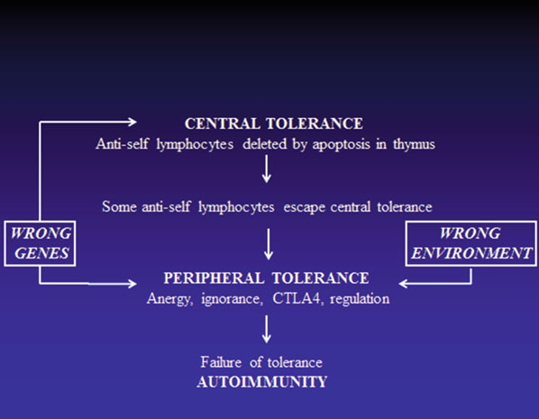

<!DOCTYPE html>
<html lang="en">
<head>
<meta charset="UTF-8">
<meta name="viewport" content="width=device-width, initial-scale=1.0">
<title>Surgical Insight Hub — Hashimoto´s Thyroiditis Monograph</title>
<link href="https://fonts.googleapis.com/css2?family=Playfair+Display:wght@400;600;700&family=Source+Serif+4:ital,opsz,wght@0,8..60,300;0,8..60,400;0,8..60,600;1,8..60,300;1,8..60,400&family=JetBrains+Mono:wght@400;500&display=swap" rel="stylesheet">
<link rel="stylesheet" href="../../css/theme.css?v=4.0.0">
<link rel="stylesheet" href="../../css/shared.css">
<script>
  const savedTheme = localStorage.getItem('sih-theme') || 'light';
  if (savedTheme === 'dark') document.documentElement.setAttribute('data-theme', 'dark');
</script>
<style>
:root {
  --primary:   #4C1D95; 
  --primary-dk:#2E1065;
  --primary-lt:#F5F3FF;
  --accent:    #7C3AED;
  --accent2:   #E11D48;
  --gold:      #D97706;
  --gold-lt:   #FEF3C7;
  --red:       #E11D48;
  --red-lt:    #FFF1F2;
  --bg:        #FAFAFA;
  --bg2:       #F4F4F5;
  --border:    #E5E7EB;
  --text:      #0F172A;
  --muted:     #64748B;
  --white:     #FFFFFF;
  --sidebar-w: 320px;
}
[data-theme="dark"] {
  --bg: #0A0702;
  --bg2: #140E05;
  --text: #F3F4F6;
  --muted: #A3A3A3;
  --border: rgba(255,255,255,0.08);
  --primary-lt: #2E1065;
  --white: #140E05;
}
*,*::before,*::after{box-sizing:border-box;margin:0;padding:0;}
html{scroll-behavior:smooth;}
body{font-family:'Source Serif 4',Georgia,serif;background:var(--bg);color:var(--text);font-size:16px;line-height:1.75;}

#sidebar {
  position: fixed; top: 0; left: 0; width: var(--sidebar-w); height: 100vh;
  background: var(--primary-dk); color: #F5F3FF;
  display: flex; flex-direction: column;
  z-index: 1000; overflow: hidden;
  transform: translateX(-100%);
  transition: transform 0.3s cubic-bezier(0.4, 0, 0.2, 1);
  box-shadow: 4px 0 24px rgba(0,0,0,0.4);
}
body.sidebar-open #sidebar { transform: translateX(0); }

#sidebar-overlay {
  position: fixed; top: 0; left: 0; width: 100vw; height: 100vh;
  background: rgba(46, 16, 101, 0.7); backdrop-filter: blur(3px);
  z-index: 950; opacity: 0; pointer-events: none; transition: opacity 0.3s ease;
}
body.sidebar-open #sidebar-overlay { opacity: 1; pointer-events: auto; }

#sidebar-toggle {
  position: fixed; top: 72px; left: 24px; z-index: 900;
  background: var(--primary); color: white;
  border: none; border-radius: 30px;
  padding: 10px 18px; font-family: 'JetBrains Mono', monospace; font-size: 13px; font-weight: 600;
  letter-spacing: 0.05em; cursor: pointer; box-shadow: 0 4px 12px rgba(0,0,0,0.25);
  display: flex; align-items: center; gap: 8px; transition: all 0.2s;
}
#sidebar-toggle:hover { background: var(--accent2); transform: translateY(-2px); }

#sidebar-header{padding:20px 20px 14px;border-bottom:1px solid rgba(255,255,255,0.08);flex-shrink:0;}
#sidebar-header .logo{font-family:'Playfair Display',serif;font-size:13px;font-weight:700;color:var(--accent2);letter-spacing:0.08em;text-transform:uppercase;margin-bottom:4px;}
#sidebar-header .sub{font-size:10.5px;color:rgba(245,243,255,0.6);letter-spacing:0.04em;}
#sidebar-search{padding:10px 14px;border-bottom:1px solid rgba(255,255,255,0.05);flex-shrink:0;}
#sidebar-search input{width:100%;background:rgba(255,255,255,0.05);border:1px solid rgba(255,255,255,0.1);border-radius:6px;color:#F5F3FF;padding:6px 10px;font-size:12px;font-family:'Source Serif 4',serif;outline:none;transition:border-color 0.2s;}
#sidebar-search input::placeholder{color:rgba(245,243,255,0.4);}
#sidebar-search input:focus{border-color:var(--accent2);}
#sidebar-nav{flex:1;overflow-y:auto;padding:8px 0 20px;}
#sidebar-nav::-webkit-scrollbar{width:4px;}
#sidebar-nav::-webkit-scrollbar-thumb{background:rgba(255,255,255,0.15);border-radius:2px;}
.vol-label{font-size:9.5px;font-weight:600;letter-spacing:0.12em;text-transform:uppercase;color:var(--accent2);padding:14px 18px 4px;}
.nav-item{display:block;padding:8px 18px 8px 22px;font-size:12.5px;color:rgba(245,243,255,0.8);text-decoration:none;border-left:2px solid transparent;transition:all 0.15s;line-height:1.4;}
.nav-item:hover{color:#fff;background:rgba(255,255,255,0.03);border-left-color:rgba(225,29,72,0.5);}
.nav-item.active{color:#fff;background:rgba(255,255,255,0.06);border-left-color:var(--accent2);font-weight:600;}
.nav-item .num{font-family:'JetBrains Mono',monospace;font-size:10px;color:rgba(245,243,255,0.4);margin-right:6px;}

#main{margin-left:0; min-height:100vh;}
#hero{background:linear-gradient(135deg,var(--primary-dk) 0%,#4C1D95 60%,#2E1065 100%);color:white;padding:120px 72px 60px;position:relative;overflow:hidden;}
#hero::before{content:'';position:absolute;top:-60px;right:-60px;width:380px;height:380px;background:radial-gradient(circle,rgba(225,29,72,0.15) 0%,transparent 70%);pointer-events:none;}
#hero::after{content:'';position:absolute;bottom:0;left:0;right:0;height:3px;background:linear-gradient(90deg,var(--accent2),var(--gold),transparent);}
#hero .eyebrow{font-family:'JetBrains Mono',monospace;font-size:11px;letter-spacing:0.16em;color:var(--accent2);text-transform:uppercase;margin-bottom:14px;}
#hero h1{font-family:'Playfair Display',serif;font-size:42px;font-weight:700;line-height:1.15;margin-bottom:10px;color:#fff;}
#hero .subtitle{font-size:18px;color:rgba(255,255,255,0.8);font-style:italic;margin-bottom:28px;}
#hero .badges{display:flex;gap:10px;flex-wrap:wrap;}
#hero .badge{background:rgba(255,255,255,0.1);border:1px solid rgba(255,255,255,0.2);border-radius:20px;padding:4px 14px;font-size:12px;color:rgba(255,255,255,0.95);font-family:'JetBrains Mono',monospace;}

.content-wrap{max-width:900px;margin:0 auto;padding:40px 48px 80px;}

.callout{margin:18px 0;padding:14px 18px;border-radius:0 8px 8px 0;border-left:4px solid;font-size:14px;line-height:1.65;}
.callout .label{font-family:'JetBrains Mono',monospace;font-size:10px;font-weight:600;letter-spacing:0.12em;text-transform:uppercase;display:block;margin-bottom:4px;}
.callout.pearl{background:var(--gold-lt);border-color:var(--gold);color:var(--text);}
.callout.pearl .label{color:var(--gold);}
.callout.warn{background:var(--red-lt);border-color:var(--red);color:var(--text);}
.callout.warn .label{color:var(--red);}

@media(max-width:900px) {
  .content-wrap { padding: 20px 20px 60px; }
  #hero { padding: 80px 20px 40px; }
  #hero h1 { font-size: 30px; }
  #sidebar-toggle { top: 64px; left: 16px; }
}
</style>
<link rel="icon" type="image/png" href="../../assets/images/Surgical_Insight_Hub_Logo.png">
</head>
<body>

<nav class="nav" id="mainNav">
  <div class="nav-left">
    <a href="../../index.html" class="nav-pill">
      <div class="nav-logo-img">
        
      </div>
      <div>
        <div class="nav-brand-text">Surgical Insight Hub</div>
        <div class="nav-brand-sub">The Residency Journal</div>
      </div>
    </a>
  </div>
  <div class="nav-links-pill">
    <a href="../../index.html">Home</a>
    <a href="../../notes.html" class="active">Notes</a>
    <a href="../operative_approach.html">Playbook</a>
    <a href="../../arena.html?v=4.0.0">MCQ Arena</a>
    <a href="../../podcast.html">Podcast</a>
    <a href="../../surgery-talk.html">Surgery Talk</a>
    <a href="../../about.html">About</a>
  </div>
  <div class="nav-right">
    <button class="theme-toggle" id="themeToggle" aria-label="Toggle Theme">
      <svg id="moonIcon" viewBox="0 0 24 24" width="18" height="18"><path d="M21 12.79A9 9 0 1 1 11.21 3 7 7 0 0 0 21 12.79z"></path></svg>
      <svg id="sunIcon" style="display:none;" viewBox="0 0 24 24" width="18" height="18"><circle cx="12" cy="12" r="5"></circle><line x1="12" y1="1" x2="12" y2="3"></line><line x1="12" y1="21" x2="12" y2="23"></line><line x1="4.22" y1="4.22" x2="5.64" y2="5.64"></line><line x1="18.36" y1="18.36" x2="19.78" y2="19.78"></line><line x1="1" y1="12" x2="3" y2="12"></line><line x1="21" y1="12" x2="23" y2="12"></line><line x1="4.22" y1="19.78" x2="5.64" y2="18.36"></line><line x1="18.36" y1="5.64" x2="19.78" y2="4.22"></line></svg>
    </button>
    <a href="https://t.me/sugicalInsightHub" target="_blank" class="nav-tg-btn" title="Join Telegram">
      <svg width="18" height="18" viewBox="0 0 24 24" fill="#f0d080"><path d="M12 0C5.37 0 0 5.37 0 12s5.37 12 12 12 12-5.37 12-12S18.63 0 12 0zm5.89 8.22l-1.97 9.28c-.15.66-.54.82-1.08.51l-3-2.21-1.45 1.39c-.16.16-.3.3-.61.3l.21-3.05 5.56-5.02c.24-.21-.05-.33-.37-.12l-6.87 4.33-2.96-.92c-.64-.2-.66-.64.14-.95l11.57-4.46c.54-.19 1.01.13.83.94z"/></svg>
    </a>
    <a href="../../arena.html?v=4.0.0" class="nav-btn arena-btn">MCQ Arena</a>
  </div>
</nav>

<div class="mob-nav-overlay" id="mobNavOverlay" onclick="closeMobNav()"></div>
<div class="mob-nav-sheet" id="mobNavSheet">
  <div class="mob-nav-handle"></div>
  <a href="../../index.html" onclick="closeMobNav()">Home</a>
  <a href="../../notes.html" onclick="closeMobNav()">Notes</a>
  <a href="../operative_approach.html" onclick="closeMobNav()">Playbook</a>
  <a href="../../podcast.html" onclick="closeMobNav()">Podcast</a>
  <a href="../../surgery-talk.html" onclick="closeMobNav()">Surgery Talk</a>
  <a href="../../arena.html" onclick="closeMobNav()">MCQ Arena</a>
  <a href="../../about.html" onclick="closeMobNav()">About</a>
  <a href="https://t.me/sugicalInsightHub" target="_blank" rel="noopener" onclick="closeMobNav()" style="color: var(--brand-gold); font-weight: 800;">Join Telegram Community</a>
</div>

<button id="sidebar-toggle" onclick="toggleSidebar()">
  <span>📜</span> Chapter Navigation
</button>
<div id="sidebar-overlay" onclick="closeSidebar()"></div>

<aside id="sidebar">
  <div id="sidebar-header">
    <div class="logo">Surgical Insight Hub</div>
    <div class="sub">Thyroid Dx Textbook Series</div>
  </div>
  <div id="sidebar-search">
    <input type="text" placeholder="Search chapters..." oninput="filterNav(this.value)">
  </div>
  <nav id="sidebar-nav">
    <div class="vol-label">All 25 Endocrine Chapters</div>
    <a class="nav-item" href="endocrine_ch01_regulation_of_thyroid_function.html"><span class="num">Ch 1</span>Regulation of Thyroid Function, Synthesis, and Function of Thyroid Hormones</a>
<a class="nav-item" href="endocrine_ch02_tests_of_thyroid_function.html"><span class="num">Ch 2</span>Tests of Thyroid Function</a>
<a class="nav-item" href="endocrine_ch03_thyroid_autoantibodies.html"><span class="num">Ch 3</span>Thyroid Autoantibodies</a>
<a class="nav-item" href="endocrine_ch04_nonisotopic_thyroid_imaging.html"><span class="num">Ch 4</span>Nonisotopic Thyroid Imaging</a>
<a class="nav-item" href="endocrine_ch05_nontoxic_goiter.html"><span class="num">Ch 5</span>Nontoxic Goiter</a>
<a class="nav-item" href="endocrine_ch06_thyroid_nodule.html"><span class="num">Ch 6</span>Thyroid Nodule</a>
<a class="nav-item active" href="endocrine_ch07_hashimoto_s_thyroiditis.html"><span class="num">Ch 7</span>Hashimoto´s Thyroiditis</a>
<a class="nav-item" href="endocrine_ch08_postpartum_thyroiditis_and_sil.html"><span class="num">Ch 8</span>Postpartum Thyroiditis and Silent Thyroiditis</a>
<a class="nav-item" href="endocrine_ch09_acute_and_subacute_thyroiditis.html"><span class="num">Ch 9</span>Acute and Subacute Thyroiditis</a>
<a class="nav-item" href="endocrine_ch10_classification_and_etiopathoge.html"><span class="num">Ch 10</span>Classification and Etiopathogenesis of Hypothyroidism</a>
<a class="nav-item" href="endocrine_ch11_congenital_hypothyroidism.html"><span class="num">Ch 11</span>Congenital Hypothyroidism</a>
<a class="nav-item" href="endocrine_ch12_central_hypothyroidism.html"><span class="num">Ch 12</span>Central Hypothyroidism</a>
<a class="nav-item" href="endocrine_ch13_diagnosis_and_treatment_of_hyp.html"><span class="num">Ch 13</span>Diagnosis and Treatment of Hypothyroidism</a>
<a class="nav-item" href="endocrine_ch14_graves_disease.html"><span class="num">Ch 14</span>Graves´ Disease</a>
<a class="nav-item" href="endocrine_ch15_graves_ophthalmopathy.html"><span class="num">Ch 15</span>Graves´ Ophthalmopathy</a>
<a class="nav-item" href="endocrine_ch16_treatment_of_graves_disease.html"><span class="num">Ch 16</span>Treatment of Graves´ Disease</a>
<a class="nav-item" href="endocrine_ch17_toxic_adenoma_and_multinodular.html"><span class="num">Ch 17</span>Toxic Adenoma and Multinodular Toxic Goiter</a>
<a class="nav-item" href="endocrine_ch18_pathogenesis_of_thyroid_carcin.html"><span class="num">Ch 18</span>Pathogenesis of Thyroid Carcinoma</a>
<a class="nav-item" href="endocrine_ch19_differentiated_thyroid_carcino.html"><span class="num">Ch 19</span>Differentiated Thyroid Carcinoma of Follicular Origin</a>
<a class="nav-item" href="endocrine_ch20_medullary_carcinoma.html"><span class="num">Ch 20</span>Medullary Carcinoma</a>
<a class="nav-item" href="endocrine_ch21_anaplastic_and_other_forms_of_.html"><span class="num">Ch 21</span>Anaplastic and Other Forms of Thyroid Carcinoma</a>
<a class="nav-item" href="endocrine_ch22_new_medical_treatment_for_thyr.html"><span class="num">Ch 22</span>New (Medical) Treatment for Thyroid Carcinoma</a>
<a class="nav-item" href="endocrine_ch23_thyroid_physiology_and_thyroid.html"><span class="num">Ch 23</span>Thyroid Physiology and Thyroid Diseases in Pregnancy</a>
<a class="nav-item" href="endocrine_ch24_non_thyroidal_illness.html"><span class="num">Ch 24</span>Non-thyroidal Illness</a>
<a class="nav-item" href="endocrine_ch25_drugs_and_other_substances_int.html"><span class="num">Ch 25</span>Drugs and Other Substances Interfering with Thyroid Function</a>

  </nav>
</aside>

<main id="main">
<header id="hero">
  <div class="eyebrow">Endocrine Surgery · Chapter 7</div>
  <h1>Hashimoto´s Thyroiditis</h1>
  <p class="subtitle">Structured Surgical Monograph formatted with fluid prose, inline textbook diagnostic plates, and clinical guidance.</p>
  <div class="badges">
    <span class="badge">Chapter 7</span>
    <span class="badge">Inline Plates</span>
    <span class="badge">Thyroid Dx PDF</span>
  </div>
</header>

<div class="content-wrap">
  <section class="topic">
    
    <div class="callout pearl" style="margin-bottom:28px;">
      <span class="label">🎓 TEXTBOOK MONOGRAPH — THYROID DX</span>
      Full surgical monograph extracted directly from <strong>Thyroid Pathology and Laboratory Diagnostics</strong> (Chapter 7: Hashimoto´s Thyroiditis). Features complete text, formatted clinical guidance, and inline textbook figures.
    </div>
<ul style="margin:12px 0 20px 20px;">
<li style="margin-bottom:8px; line-height:1.65;"><strong>Hashimoto’s Thyroiditis Wilmar</strong> M. Wiersinga Contents</li>
</ul>
<h3 style="font-family:'Playfair Display',serif; font-size:20px; color:var(--primary); margin:32px 0 14px; border-bottom:1px solid var(--border); padding-bottom:6px;">Introduction ......................................................................................</h3>

                <div style="display:flex; gap:16px; margin:20px 0; padding:16px; border-radius:14px; border:1px solid var(--border); background:var(--bg2); align-items:center;">
                  <div style="width:180px; min-width:180px; height:140px; border-radius:10px; overflow:hidden; border:1px solid var(--border); background:#fff; display:flex; align-items:center; justify-content:center; padding:6px; flex-shrink:0;">
                    
                  </div>
                  <div style="flex:1;">
                    <div style="font-family:'JetBrains Mono',monospace; font-size:11px; font-weight:700; color:var(--accent2); text-transform:uppercase; margin-bottom:6px;">Textbook Illustration &amp; Diagnostic Plate</div>
                    <div style="font-size:13.5px; color:var(--muted); line-height:1.5;">High-resolution diagnostic plate illustrating introduction ...................................................................................... in Chapter 7.</div>
                  </div>
                </div>
<p style="font-size:16px; line-height:1.75; margin-bottom:16px; color:var(--text);">Diagnostic Criteria ............................................................................... Histopathology ............................................................................... Thyroid Antibodies .......................................................................... Goiter ......................................................................................... Thyroid Function ............................................................................ Thyroid Ultrasonography .................................................................... Classification of Hashimoto’s Thyroiditis and Its Variants .....................................</p>
<h3 style="font-family:'Playfair Display',serif; font-size:20px; color:var(--primary); margin:32px 0 14px; border-bottom:1px solid var(--border); padding-bottom:6px;">Epidemiology ....................................................................................</h3>

                <div style="display:flex; gap:16px; margin:20px 0; padding:16px; border-radius:14px; border:1px solid var(--border); background:var(--bg2); align-items:center;">
                  <div style="width:180px; min-width:180px; height:140px; border-radius:10px; overflow:hidden; border:1px solid var(--border); background:#fff; display:flex; align-items:center; justify-content:center; padding:6px; flex-shrink:0;">
                    
                  </div>
                  <div style="flex:1;">
                    <div style="font-family:'JetBrains Mono',monospace; font-size:11px; font-weight:700; color:var(--accent2); text-transform:uppercase; margin-bottom:6px;">Textbook Illustration &amp; Diagnostic Plate</div>
                    <div style="font-size:13.5px; color:var(--muted); line-height:1.5;">High-resolution diagnostic plate illustrating epidemiology .................................................................................... in Chapter 7.</div>
                  </div>
                </div>
<p style="font-size:16px; line-height:1.75; margin-bottom:16px; color:var(--text);">Prevalence .................................................................................... Incidence .....................................................................................</p>
<h3 style="font-family:'Playfair Display',serif; font-size:20px; color:var(--primary); margin:32px 0 14px; border-bottom:1px solid var(--border); padding-bottom:6px;">Pathogenesis .....................................................................................</h3>

                <div style="display:flex; gap:16px; margin:20px 0; padding:16px; border-radius:14px; border:1px solid var(--border); background:var(--bg2); align-items:center;">
                  <div style="width:180px; min-width:180px; height:140px; border-radius:10px; overflow:hidden; border:1px solid var(--border); background:#fff; display:flex; align-items:center; justify-content:center; padding:6px; flex-shrink:0;">
                    
                  </div>
                  <div style="flex:1;">
                    <div style="font-family:'JetBrains Mono',monospace; font-size:11px; font-weight:700; color:var(--accent2); text-transform:uppercase; margin-bottom:6px;">Textbook Illustration &amp; Diagnostic Plate</div>
                    <div style="font-size:13.5px; color:var(--muted); line-height:1.5;">High-resolution diagnostic plate illustrating pathogenesis ..................................................................................... in Chapter 7.</div>
                  </div>
                </div>
<p style="font-size:16px; line-height:1.75; margin-bottom:16px; color:var(--text);">Genes and Environment ......................................................................... Genetic Factors .............................................................................. Environmental Factors .......................................................................</p>
<h3 style="font-family:'Playfair Display',serif; font-size:20px; color:var(--primary); margin:32px 0 14px; border-bottom:1px solid var(--border); padding-bottom:6px;">References .......................................................................................</h3>

                <div style="display:flex; gap:16px; margin:20px 0; padding:16px; border-radius:14px; border:1px solid var(--border); background:var(--bg2); align-items:center;">
                  <div style="width:180px; min-width:180px; height:140px; border-radius:10px; overflow:hidden; border:1px solid var(--border); background:#fff; display:flex; align-items:center; justify-content:center; padding:6px; flex-shrink:0;">
                    
                  </div>
                  <div style="flex:1;">
                    <div style="font-family:'JetBrains Mono',monospace; font-size:11px; font-weight:700; color:var(--accent2); text-transform:uppercase; margin-bottom:6px;">Textbook Illustration &amp; Diagnostic Plate</div>
                    <div style="font-size:13.5px; color:var(--muted); line-height:1.5;">High-resolution diagnostic plate illustrating references ....................................................................................... in Chapter 7.</div>
                  </div>
                </div>
<p style="font-size:16px; line-height:1.75; margin-bottom:16px; color:var(--text);">Abstract Hashimoto’s thyroiditis is best defined as an organ-specific autoimmune disease, characterized by autoimmune-mediated destruction of the thyroid gland. Diagnos- tic criteria have changed dramatically since the first description in 1912; they now include the presence of antibodies against thyroid peroxidase (TPOAb) and thyro- globulin, hypoechogenicity on thyroid ultrasound, and often but not always hypo- thyroidism. Distinct pathologic phenotypes are recognized: goitrous and atrophic variants but also an IgG4-related variant, hashitoxicosis, juvenile thyroiditis, and W. M. Wiersinga (*) Department of Endocrinology and Metabolism, Academic Medical Center, University of Amsterdam, Amsterdam, The Netherlands e-mail: w.m.wiersinga@amc.uva.nl # Springer International Publishing AG, part of Springer Nature 2018 P. Vitti, L. Hegedüs (eds.), Thyroid Diseases, Endocrinology, silent or painless thyroiditis. With a prevalence of 10–12% in the general popula- tion, it is the most common autoimmune disease. The prevalence is higher in females than in males, increases with advancing age, and is highest in Whites and lowest in Blacks. The incidence of autoimmune hypothyroidism is about 350 cases/ 100,000/year for women and 60 cases/100,000/year for men in iodine-sufficient regions and 44 (females) and 12 (males) per 100,000 per year in iodine-deficient areas. Breakdown of self-tolerance against thyroid antigens may lead to thyroid autoimmunity. Loss of Treg inhibitory actions and gain of Th17 proinflammatory actions (reflected by a shift to higher values of Th17/Th10 ratio in peripheral blood) play a crucial role in the loss of tolerance against thyroid antigens. Cytotoxic CD8+ Tcells directed against TPO and Tg mediate thyroid gland destruction, either by the granule exocytosis pathway or apoptosis (programmed cell death). TPOAb and TgAb may cause antibody-dependent cell-mediated cytotoxicity (ADCC) via complement-mediated lysis of thyrocytes. Hashimoto’s thyroiditis often runs in families as evident from a high sibling risk ratio of 28. Twin studies suggest genes contribute about 73% of the liability to the development of TPOAb and TgAb; environmental factors would thus contribute about 20–30%. Polymorphisms in TSHR, Tg, HLA, CTLA-4, IL2RA, and FOXP3 have all been associated with Hashimoto’s thyroiditis but account for only a small proportion of the heritability. Genome-wide association studies continue to detect novel genetic loci linked to TPOAb. Smoking and moderate alcohol consumption to a certain extent protect against Hashimoto’s thyroiditis. Low selenium or vitamin D intake are presumably related to a higher prevalence of TPOAb, but presently there is no convincing evidence that selenium or vitamin D supplementation may lower TPOAb concen- tration. Infections may provoke Hashimoto’s thyroiditis, but available epidemio- logical studies do not support a causative role. Keywords Hashimoto’s thyroiditis · History · Diagnosis · Epidemiology · Immunopathogenesis · IgG4 · Genetic polymorphisms · Environment</p>
<h3 style="font-family:'Playfair Display',serif; font-size:20px; color:var(--primary); margin:32px 0 14px; border-bottom:1px solid var(--border); padding-bottom:6px;">Introduction</h3>
<p style="font-size:16px; line-height:1.75; margin-bottom:16px; color:var(--text);">Autoimmune thyroid disease (AITD) can be defined as a complex disease characterized by an autoimmune response against thyroid antigens, which may develop against a certain genetic background and facilitated by exposure to particular environmental factors. Hashimoto’s disease and Graves’ disease are well-known examples of AITD: Hashimoto’s disease is associated with antibodies against thyroid peroxidase (TPOAb) and hypothyroidism, whereas Graves’ disease is associated with antibodies against thyroid-stimulating hormone receptor (stimulating TSHRAb) and hyperthyroidism (Aijan and Weetman 2015; Smith and Hegedus 2016). Thus, at first sight, there is a clear distinction between Hashimoto’s and Graves’ disease, TPOAb being the hallmark of Hashimoto’s disease and TSHRAb being the hallmark of Graves’ disease. The neat W. M. Wiersinga dichotomy, however, is deceptive. TPOAb are also present in 70% of patients with Graves’ disease, and hypothyroidism occurs in the long run in up to 20% of patients with Graves’ hyperthyroidism who have entered remission after a course of antithyroid drugs; blocking TSHRAb contributed to the late development of hypothyroidism in one third of cases and chronic autoimmune thyroiditis in the remaining two thirds (Wood and Ingbar 1979; Hedley et al. 1989; Tamai et al. 1989). Conversely, some patients with Hashimoto’s disease may have either stimulating or blocking TSHRAb (Konishi et al. 1983), and cases have been described in which Hashimoto’s hypothyroidism converts into overt Graves’ hyperthyroidism likely explained by a change from blocking to stimulating TSHRAb (Bell et al. 1985; McLachlan and Rapoport 2013). One may consider Hashimoto’s hypothyroidism and Graves’ hyperthyroidism as the extreme ends of a continuous spectrum of thyroid autoimmunity (Prummel and Wiersinga 2002; Mariotti 2012). It is tempting to speculate that the natural history of autoimmune thyroid disease is in principle that of Hashimoto’s thyroiditis characterized by the occurrence of TPOAb and TgAb, with the slow development over years of subclinical and finally overt autoimmune hypothyroidism in some but not all patients (Effraimidis et al. 2011a). Development of Graves’ hyperthyroidism in contrast is rather fast, happening in a few months; its occurrence might be considered the default of AITD, which usually follows the course of Hashimoto’s thyroiditis. Hashimoto’s thyroiditis can probably best be defined as an organ-specific autoimmune disease, characterized by autoimmune-mediated destruction of the thyroid gland. The diagnosis is nowadays suggested by a typical ultrasound pattern and the presence of TPOAb and/or TgAb (Radetti 2014). Indeed thyroid hypoechogenicity, among patients with goiter and circulating thyroid antibodies, identifies those with Hashimoto’s thyroiditis who are prone to develop hypothyroidism (Fig. 1; Marcocci et al. 1991). Such characteristics are Fig. 1 Prevalence of hypothyroidism according to the degree of thyroid hypoechogenicity in patients with Hashimoto’s thyroiditis and diffuse low thyroid echogenicity (Modified from Marcocci et al. 1991) Hashimoto’s Thyroiditis a world apart from the original description by Hashimoto himself, which mentions goitrous enlargement of the thyroid gland with lymphocytic infiltration (“struma lymphomatosa”) (Hashimoto 1912). At the time of Hashimoto’s paper, the very exis- tence of thyroid antibodies was unknown (they were detected only in 1956 by Roitt et al.) (Roitt et al. 1956), and thyroid ultrasonography was gradually introduced in clinical practice not earlier than in the 1980s. The concept of Hashimoto’s thyroiditis as a particular disease entity thus has evolved enormously over the past century. We will investigate the accuracy of the various diagnostic criteria for Hashimoto’s thyroiditis. Applied criteria are from the disciplines of pathology (lymphocytic infiltrate?), clinical medicine (goiter?), immunology (thyroid antibodies?), radiology (thyroid hypo- echogenicity?), and biochemistry (abnormal thyroid function?). Diagnostic Criteria Histopathology Hashimoto’s thyroiditis is typically a diffuse inflammation of the thyroid gland consisting of a combination of epithelial cell destruction, lymphoid cellular infiltra- tion, and fibrosis. The thyroid cells are packed with mitochondria and have an acidophilic character; they are called Hűrthle or Askenazy cells. Clusters of macrophage-like cells can be seen within the follicles. The lymphoid infiltration in the interstitial tissue is accompanied by actual lymphoid follicles and germinal centers (Ben-Skowronek et al. 2011). In the early 1960s, the consistency of the histopathological diagnosis of Hashimoto’s disease was studied among pathologists (Masi et al. 1965). At that time uncertainty existed about the proper use of the terms Hashimoto’s disease versus chronic thyroiditis: were the lesions designated by each term distinguishable from each other and were there specific criteria for each diagnosis? Randomly selected surgical specimens which had been indexed in the pathology department of the Johns Hopkins Hospital as either Hashimoto’s disease, chronic thyroiditis, or other fibro-lymphocytic disorders were investigated in a blinded fashion by eight experts. They had to mark as absent, minimal, moderate, or severe each of the following histopathologic characteristics present in the original description of Hashimoto: lymphoid infiltration, lymphoid follicle formation, plasma cell infiltration, Hűrthle cell dysplasia, epithelial hyperplasia, epithelial desqua- mation, follicular atrophy, colloid nodules, and scarring and then make a diagnosis: Hashimoto’s disease, chronic thyroiditis, or other disease. There was considerable difference between observers in their use of the terms Hashimoto’s disease and chronic thyroiditis: both diagnoses were frequently made on the same slides by different observers. If, however, the diagnoses Hashimoto’s disease and chronic thyroiditis were combined, the interobserver agreement increased appreciably to 85%. Hashimoto’s disease was diagnosed preferentially on the more fully developed lesions showing marked alterations in all fields, whereas slides diagnosed as chronic thyroiditis tended to show focal alterations. The alterations were indistinguishable from each other under high-power magnification. The authors concluded that both terms indicated the same W. M. Wiersinga disease entity, which they preferred to call Hashimoto’s disease (Masi et al. 1965). But the label chronic lymphocytic thyroiditis seemed equally acceptable. The issue of focal thyroiditis has been given much consideration. Early studies recognized its frequent occurrence in macroscopically normal thyroids at necropsy, chiefly in middle-aged and elderly women; it was regarded as a precursor or a nonprogressive form of the diffuse chronic thyroiditis associated with primary myxedema (Williams and Doniach 1962). A quantitative study on the postmortem incidence of focal thyroiditis was done in all thyroids sectioned over 5 years (1948–1953) at the Hammersmith Hospital in London, UK. Thyroid sections were available in 40% of all necropsies; availability depended more on the person carrying out the examination than on the nature of the disease, and therefore it was thought the observed trends in sex and age distribution were generally reliable. The sole criterion applied for the existence of focal thyroiditis was the presence of a collection of lymphocytes or plasma cells easily visible with a low-power objective in 6-μ-thick sections. The presence of follicle breakdown or oxyphil cell change was not considered a prerequisite for the diagnosis of focal thyroiditis, although follicle break- down was almost invariably and oxyphil change frequently present in those cases with more than 10 foci per square cm. Sections from 724 thyroids were examined. Focal thyroiditis (>10 foci/cm2) was present in 6% of adult males and 22% of adult females, with a higher incidence in older women (Williams and Doniach 1962). An increase in the incidence and severity of focal thyroiditis was found in the presence of the autoimmune disease pernicious anemia, suggesting that focal thyroiditis points to weakening of immune tolerance. Whether all cases of focal thyroiditis belong to the disease entity of Hashimoto’s disease is uncertain. On the one hand, the presence of focal thyroiditis in thyroid tissue obtained by biopsy and at autopsy from patients with no evidence of hypothyroidism during life is correlated to raised serum concentrations of TPOAb and TgAb (Vanderpump 2011). On the other hand, focal thyroiditis is not uncommon, and practically all thyrotoxic glands removed at operation show small lymphocytic foci. Does this mean that the thyroid is limited in its pattern of reaction and that several distinct processes lead to the same morphological end result? Such questions are still not answered in a satisfactory manner. To celebrate the centennial of Hashimoto’s original paper in 2012, the surgical pathology archives of the Johns Hopkins Hospital were searched for cases of Hashimoto’s thyroiditis in the period 1889–2012 (Caturegli et al. 2013). Cases with lymphocytic infiltration of the thyroid gland with germinal center formation and Hűrthle cell metaplasia were accepted as Hashimoto’s thyroiditis. However, the presence of a simple lymphocytic infiltration was not considered indicative of Hashimoto’s thyroiditis; such lesions of focal nature without germinal centers and lack of Hűrthle cells are often referred to as chronic nonspecific thyroiditis. The first case labeled as Hashimoto appeared in 1942, 30 years after the original description. Prior to this date, there were three cases satisfying the diagnostic criteria (in 1928, 1935, and 1939). Between 1942 and 2012, a total of 867 cases of Hashimoto’s thyroiditis were identified, 6% of all thyroid surgical specimens. Approximately half of the cases (n = 462) were isolated, meaning Hashimoto’s thyroiditis was the sole pathologic finding. The remaining half (n = 405) were those in which Hashimoto’s thyroiditis was found incidentally in association with other pathologies, mainly with Hashimoto’s Thyroiditis papillary thyroid carcinoma (but also with Hűrthle cell carcinoma and medullary thyroid carcinoma). Papillary thyroid carcinoma was found in 231 of the 867 cases (26.6%) of Hashimoto’s thyroiditis (Caturegli et al. 2013). This prevalence is similar to that reported from Krakow (106 papillary cancers out of 452 cases of Hashimoto’s thyroiditis, 23.5%); interestingly, this prevalence of 23.5% is threefold higher than the 7.5% prevalence of papillary thyroid carcinoma in non-Hashimoto’s thyroiditis patients (Konturek et al. 2013). The number of annual Hashimoto cases at Johns Hopkins increased significantly over the period 1943–1967 and then remained constant between 1968 and 1992, before increasing again between 1993 and 2012 (Caturegli et al. 2013). The main contributor to the recent increase in incidence was Hashimoto’s thyroiditis associated with papillary thyroid carcinoma. The annual increase in papillary thyroid carcinoma was accompanied not only by increases in cases associated with Hashimoto’s thyroiditis but also by increases in cases associ- ated with less prominent lymphocytic infiltration sometimes referred to as chronic nonspecific thyroiditis. The overall conclusion is that modern-day pathologic fea- tures of Hashimoto’s thyroiditis are nearly identical to the ones originally reported by Hashimoto in 1912 (Caturegli et al. 2013). Thyroid Antibodies After the 1956 discovery of thyroid antibodies in the serum of patients with Hashimoto’s disease (Roitt et al. 1956), measurement of TPOAb (originally known as thyroid microsomal antibodies) and TgAb gradually entered daily clinical practice. Consequently, as of the 1970s the presence of TPOAb and/or TgAb in serum was considered as positive proof for the existence of Hashimoto’s thyroiditis. The original assays (e.g., applied in the Whickham Survey in 1972) used a semi- quantitative particle agglutination technique. But improved technology employing purified antigens and monoclonal antibodies led to quantitative immunoassays with higher sensitivity and specificity in the next decades. It resulted in assays capable to detect TPOAb and TgAb in the serum of every single healthy person (Zophel et al. 2003). This generated the quest for reliable reference intervals, as only elevated concentrations of thyroid antibodies in serum would permit the diagnosis of thyroid autoimmunity. The upper normal limit can be determined in various ways: 1. By a traditional nonparametric scale 2. By NACB (National Academy of Clinical Biochemistry) criteria, i.e., restricting blood sampling to males younger than 30 years without risk factors for thyroid autoimmunity and with TSH values between 0.5 and 2.5 mU/L (Demers and Spencer 2003) 3. By a model of “composite logarithmic Gaussian distributions” (Jensen et al. 2006) The 97.5% upper limits (using an immunometric assay with detection limits of <1.0 kU/L for both TPOAb and TgAb) according to these three models were W. M. Wiersinga 284, 24, and 9.8 kU/L for TPOAb, respectively, and 84, 22, and 19 lU/L for TgAb. The decision value (defined as the concentration corresponding to 0.1% false positives) was 15 kU/L for TPOAb and 31 kU/L for TgAb (Jensen et al. 2006). For meaningful interpretation of results, the assay methodology and especially its upper normal limit should be known. Patients with hypothyroidism caused by either atrophic or goitrous autoimmune thyroiditis have rather high serum concentrations of TPOAb and TgAb, but these antibodies are also present – albeit usually at lower concentrations – in 70% of patients with Graves’ hyperthyroidism. Serum TPOAb may not be detected in about 10% of individuals with ultrasound evidence of Hashimoto’s thyroiditis (Biondi and Cooper 2008). Cases of seronegative Hashimoto’s thyroiditis have been described in which thyroid autoantibody produc- tion was localized to the thyroid (Baker et al. 1988). Nevertheless, serum TPOAb and TgAb remain sensitive and specific markers for thyroid autoimmunity. Interest- ingly, antibodies against the TSHR have also been described in Hashimoto’s thy- roiditis. Blocking TSHRAb were detected already in the 1980s (Konishi et al. 1983; Endo et al. 1978), but their role in various conditions remained controversial. With the advent of more accurate assays for blocking and stimulating TSHRAb, it has become clear that patients can exhibit a mixture of both blocking and stimulating TSHRAb, the ratio of which may vary over time and influence the clinical presen- tation (Evans et al. 2010; Li et al. 2013a; Diana et al. 2016). Stimulating TSHRAb are present in all patients with Graves’ hyperthyroidism with or without Graves’ orbitopathy but also in 5.5% of patients with Hashimoto’s thyroiditis (defined as euthyroid or hypothyroid patients with at least fivefold increased levels of TPOAb and heterogeneous hypoechoic pattern on thyroid ultrasound) and in 68.2% of patients with Hashimoto’s thyroiditis and coexistent Graves’ orbitopathy (Kahaly et al. 2016). Autoimmunity against the TSH receptor consequently is not limited to Graves’ disease but is involved in Hashimoto’s thyroiditis as well. Goiter Following wider application of TPOAb and TgAb assays, it became obvious that these antibodies were also present in subjects without goiter. Actually, the vast majority of patients with Hashimoto’s thyroiditis have no goiter, and at the time of diagnosis only a minority of patients with overt autoimmune hypothyroidism have goiter (Laurberg et al. 1999). The prevalence of goiter in the setting of Hashimoto’s thyroiditis is in the order of 5–10% according to a rough estimate. Thyroid Function In a study published in 1992, a correlation was sought between thyroid function and histology in 601 patients with chronic thyroiditis, as characterized by mononuclear cell infiltration (Mizukami et al. 1992). There were 137 patients (23%) with oxy- philic chronic thyroiditis (moderate to severe diffuse cell infiltration, follicular Hashimoto’s Thyroiditis epithelial changes almost in all cells, mild to severe fibrosis); their median age was 44 years and 85% were hypothyroid (latent in 38% and overt in 47%). In the group of 161 patients (27% of total) with mixed chronic thyroiditis (moderate diffuse cell infiltration, various follicular epithelial changes, and minimal to mild fibrosis), median age was 38 years; 39% had hypothyroidism (latent in 33.5% and overt in 5.5%), 38% were euthyroid and 23% hyperthyroid. Focal thyroiditis was observed in 149 patients (25%) with a median age of 37 years; hypothyroidism was present in 15% (all except one had latent hypothyroidism), euthyroidism in 83%, and hyper- thyroidism in 2%. The greater the extent of cell infiltration in focal thyroiditis, the smaller the proportion of patients who were euthyroid and the greater the proportion of latent hypothyroid patients. Hyperplastic chronic thyroiditis (mild to moderate focal cell infiltration, mild to severe diffuse hyperplastic epithelial cell changes) occurred in 154 patients (26%) with a median age of 33 years; hypothyroidism was present in 10% (latent in 3% and overt in 7%), euthyroidism in 5%, and hyperthy- roidism in 85%. Taken together, patients with the classic oxyphilic variant were the oldest and those with hyperplastic thyroiditis the youngest (44 vs. 33 years), whereas hypothyroidism was most prevalent in the oxyphilic variant (85%) and hyperthy- roidism most in the hyperplastic variant (85%). Patients with focal thyroiditis had the highest proportion of euthyroidism (83%), and their mean age of 37 years lay in between those of the two other groups. Hashimoto’s thyroiditis may thus occur in the presence of hypothyroidism, euthyroidism, or hyperthyroidism, and thyroid function by itself lacks sufficient sensitivity and specificity for the diagnosis of Hashimoto’s thyroiditis. Thyroid Ultrasonography Marked diffuse or inhomogeneous hypoechogenicity or patchy echo pattern are typical sonographic signs of Hashimoto’s thyroiditis (Bennedbaek and Hegedus 2007). Hypoechogenicity is a consequence of lymphocytic aggregations, which appear as very homogeneous tissue without reflecting surfaces (Radetti 2014). Thus, abnormal echogenicity is observed in all patients with Hashimoto’s thyroiditis (Fig. 2). The high sensitivity of thyroid ultrasonography is further illustrated by reports that a hypoechoic ultrasound pattern or an irregular echo pattern may precede the occurrence of TPOAb in serum (Biondi and Cooper 2008). Specificity of hypoechogenicity is however more limited: e.g., a homogeneous and diffusely hypoechoic echo pattern is observed in Graves’ disease. Taken together, none of the abovementioned diagnostic criteria has 100% sensi- tivity and specificity for the diagnosis of Hashimoto’s thyroiditis. Histopathology comes close, although the issue of focal thyroiditis has not been resolved satisfac- torily. TPOAb and TgAb, if elevated, do indicate thyroid autoimmunity in general; they are more associated with Hashimoto’s thyroiditis and hypothyroidism than with Graves’ hyperthyroidism. The absence of goiter and hypothyroidism does not exclude the diagnosis of Hashimoto’s thyroiditis. The finding of thyroid hypo- echogenicity can be of great help. It follows that the combination of thyroid W. M. Wiersinga ultrasound, thyroid function tests, and thyroid antibodies usually allows to make a reliable diagnosis of Hashimoto’s thyroiditis. Cytology and histopathology are nowadays rarely required to ascertain the diagnosis. Classification of Hashimoto’s Thyroiditis and Its Variants A number of variants of Hashimoto’s thyroiditis have been described (Doniach et al. 1979; Livolsi 1994; Caturegli et al. 2014) and listed in Table 1: Fibrous variant. The fibrosis is dominant (in contrast to what is seen in the classic variant and the IgG4-related variant), still remaining within the thyroid capsule (thus distinguishing it from Riedel’s thyroiditis with its adhesion to the surrounding structures) (Caturegli et al. 2014). Pathologically, the thyroid architecture is destroyed; there is marked follicular atrophy, dense keloid-like fibrosis, and Fig. 2 Thyroid ultrasonography and cytology in two patients with Hashimoto’s thyroiditis: note hypoechogenicity and lymphocytic infiltration in patient A with diffusely enlarged thyroid gland (top panel: TSH 1.8 mU/L, TPOAb >1,000 kU/L, TgAb 157 kU/L) and patient B with nodular goiter (bottom panel: TSH 0.5 mU/L, TPOAb 1,000 kU/L, TgAb 89 kU/L) (Courtesy of Prof. Paolo Vitti, Pisa, Italy) Hashimoto’s Thyroiditis</p>
<h3 style="font-family:'Playfair Display',serif; font-size:20px; color:var(--primary); margin:32px 0 14px; border-bottom:1px solid var(--border); padding-bottom:6px;">Table 1 Characteristics of the various forms of Hashimoto’s thyroiditis</h3>
<p style="font-size:16px; line-height:1.75; margin-bottom:16px; color:var(--text);">Juvenile Hashitoxicosis IgG4 related Classic (goitrous) Fibrous (atrophic) Peak age at onset 10–18 year 40–60 year 40–50 year 40–60 year 60–70 year F:M ratio 6:1 5:1 3:1 12:1 10:1 Thyroid function at presentation Normal/subclinical hypo Hyperthyroid Hypothyroid Mostly normal Hypothyroid Ultrasonography Hypoechogenicity Hypoechogenicity Strong hypoechogenicity Hypoechogenicity Hypoechogenicity + nodularity 24 h RAI uptake Variable Increased Unknown Variable Decreased Fibrosis No No Yes Yes Severe Modified from Caturegli et al. 2014 W. M. Wiersinga prominent squamous metaplasia (Livolsi 1994). It occurs in about 10% of cases, often affecting elderly people with symptomatic goiters and hypothyroidism (Katz and Vickery 1974). The fibrous variant coincides mostly with the atrophic subtype. Both names, however, do not always indicate the same condition. For example, there are patients belonging to the fibrous variant, who present with a goiter and conse- quently cannot be regarded as having atrophic thyroiditis. Goitrous and atrophic variants. Chronic autoimmune thyroiditis has a goitrous (classic) form often referred to as Hashimoto’s disease (in agreement with the presence of a goiter in the patients described by Hashimoto himself in 1912) and an atrophic form sometimes referred to as Ord’s disease (as first reported by W.M. Ord in 1888 in the famous Report on Myxedema from the Clinical Society of London, mentioning the thyroid as “in every case reduced in size, and described variously as durated, fibrous and structureless”) (Dayan and Daniels 1996; Davies 2003). Goitrous autoimmune thyroiditis is characterized by diffuse lymphocytic infiltra- tion with occasional germinal centers, thyroid follicles of reduced size containing sparse colloid, and fibrosis. Although the follicles are small, individual thyroid cells often appear enlarged and contain cytoplasma that is granular and pink (oxyphil change), known as Hűrthle or Askenazy cells (Dayan and Daniels 1996). In atrophic autoimmune thyroiditis, the thyroid gland is small, with lym- phocytic infiltration and fibrous tissue replacing the thyroid parenchyma. It has been proposed that goitrous autoimmune thyroiditis and atrophic autoimmune thyroiditis (also known as primary or idiopathic myxedema) are two separate disease entities, the former associated with HLA-DR5 and the latter with HLA-DR3/B8 (Irvine et al. 1978; Doniach 1981). Atrophic thyroiditis, as com- pared to goitrous thyroiditis, is further associated with greater antibody-dependent cell-mediated cytotoxicity (Bogner et al. 1995) and a higher prevalence of TSH receptor-blocking antibodies (Takasu et al. 1987; Chiovato et al. 1990; Cho et al. 1995). It has been hypothesized that atrophic thyroiditis represents the end stage of goitrous thyroiditis. Actually, a number of studies argue against this hypothesis. The age at presentation is not different between either subtypes (Bogner et al. 1995; Carlé et al. 2009). Little histologic progression has been observed in patients with Hashimoto’s thyroiditis undergoing second biopsies up to 20 years after the first (Vickery and Hamblin 1961; Hayashi et al. 1985). Goitrous lymphocytic thyroid- itis changed little as a function of time in many patients regardless of whether thyroid hormone was administered (Hayashi et al. 1985). In a population-based study in Denmark, the prevalence of subclinical goitrous Hashimoto’s disease was 0.62% (thyroid volume >14.9 ml) and of subclinical autoimmune atrophic thy- roiditis was 0.24% (thyroid volume <6.6 ml); there was a strong association between large volume and TPOAb/TgAb but only in subjects with elevated TSH (>3.6 mU/L) (Bulow Pedersen et al. 2005). In another Danish population-based study, all patients with incident overt autoimmune hypothyroidism were prospec- tively identified (Carlé et al. 2009). Thyroid volume showed a Gaussian distribu- tion in both males and females with no bimodal pattern. Thyroid volume was positively associated with TPOAb and TgAb concentrations and negatively with echogenicity and serum TSH. Thyroid volume was not related to the prevalence of Hashimoto’s Thyroiditis TSH receptor antibodies nor to duration of symptoms before diagnosis. The authors conclude that goitrous thyroiditis and atrophic autoimmune thyroiditis are only extremes of a continuous Gaussian distribution and do not represent separate disorders. However, patients with low or high thyroid volume differ with respect to several characteristics. IgG4-related variant. IgG4-related disease is a newly recognized fibro- inflammatory condition characterized by a tendency to form tumefactive lesions at multiple sites, a peculiar histopathologic appearance, and often but not always elevated serum IgG4 concentrations (Deshpande et al. 2012a). Critical histopath- ological features are a dense lymphoplasmacytic infiltrate (predominantly T cells with scattered aggregates of B cells; plasma cells are essential and may predom- inate), a storiform pattern of fibrosis (irregularly whorled pattern), and oblitera- tive phlebitis. The diagnosis of IgG4-related diseases requires tissue IgG4 immunostaining: IgG4+ plasma cells that number >50 per high-power field might be specific but appropriate cutoffs vary per organ. The IgG4+/IgG+ plasma cell ratio might be a more accurate diagnostic tool than IgG4+ plasma cell count, with a ratio of >40% as a comprehensive cutoff value in any organ. The serum IgG4 concentration is elevated in many patients with IgG4-related disease but is normal in up to 40% of patients with biopsy-proven IgG4-related disease. Neither elevated serum IgG4 nor elevated numbers of IgG4+ plasma cells in tissue are specific for IgG4-related disease. Morphological features in the appropriate clinical context form the basis for the diagnosis of IgG4-related disease (Deshpande et al. 2012a). Riedel’s thyroiditis is the prime example of an IgG4- related thyroid disease (Dahlgren et al. 2010). IgG4-related variants of Hashimoto’s thyroiditis were first described in 2009 (Li et al. 2009). Among 70 Japanese patients, who had undergone thyroidectomy because of goitrous Hashimoto’s thyroiditis, 19 (27%) had IgG4 thyroiditis (Li et al. 2010). Patients with IgG4 thyroiditis showed a higher grade of stromal fibrosis, lymphoplasmacytic infiltration, and follicular cell degeneration than non-IgG4 thyroiditis patients. IgG4 thyroiditis was further associated with a higher propor- tion of male gender, a shorter disease duration, more prevalent subclinical hypothyroidism, higher serum IgG4, higher concentration of TPOAb and TgAb, and more frequently low echogenicity at ultrasound examination. The prevalence of IgG4-related Hashimoto’s thyroiditis was 36%, 23%, and 13% among all cases of Hashimoto’s thyroiditis in subsequent studies (Tasli et al. 2014; Zhang et al. 2014; Jokisch et al. 2016). The IgG4-related variant in these studies was associated with younger age, relatively more males, more fibrosis, and greater tissue expression of TGF-β1. The fibrous variant of Hashimoto’s thyroiditis was proposed to be a IgG4-related thyroid disease (Deshpande et al. 2012b). A recent German study observed a 96% prevalence of the fibrous variant among IgG4-related Hashimoto’s thyroiditis, whereas the prevalence was 18% in non-IgG4-related Hashimoto’s thyroiditis (Jokisch et al. 2016). So the majority of cases with the fibrous variant are not IgG4 related. The clinical relevance of identifying the IgG4-related variant is unclear, especially because the pathoge- netic role of IgG4 – if any – has not been resolved. IgG4 (in contrast to IgG1) is W. M. Wiersinga not causing damage to thyroid cells (Guo et al. 1997). However, it could be speculated that IgG4-related thyroiditis might benefit from steroids which could diminish progression of fibrosis (Minamino et al. 2016). Hashitoxicosis. Thyroidal lymphocytic infiltration is similar to that in the classic (goitrous) form, but germinal center formation is rare or absent, follicular atrophy absent or actually replaced by hyperplasia, Hűrthle cell metaplasia less extensive, and fibrosis milder (Caturegli et al. 2014). Hashitoxicosis, described first by Fatourechi in 1971 (Fatourechi et al. 1971), has the clinical features of Graves’ hyperthyroidism (elevated thyroidal radioiodine uptake and presence of stimulating TSHRAb) but the histopathology of Hashimoto’s thyroiditis. The hyperthyroidism is transient and evolves into permanent hypothyroidism after 3–24 months (Wasniewska et al. 2012a). This sequence of events is frequently related to a change from stimulating to blocking TSHRAb (Nabhan et al. 2005). Juvenile thyroiditis has the same pathology as hashitoxicosis. Most children have goiter but are usually asymptomatic. At time of diagnosis, 43% are euthyroid, and 24% have subclinical hypothyroidism, 21% overt hypothyroidism, 9% overt hyper- thyroidism, and 3% subclinical hyperthyroidism (Demirbilek et al. 2007; Wasniewska et al. 2012b). The natural history is variable, with remissions and recurrences or evolution to permanent hypothyroidism. Silent or painless thyroiditis and postpartum thyroiditis can be considered as still other variants of Hashimoto’s thyroiditis. Thyroid biopsy shows follicular disruption and lymphocytic thyroiditis, while stromal fibrous and oxyphilic changes are rare. Dissimilarities with the classic form include the relative lack of oncocytic metapla- sia, minimal to absent follicular atrophy, and mild or no fibrosis (Mizukami et al. 1988, 1993). Typically, these conditions have a triphasic pattern, starting with thyrotoxicosis, followed by hypothyroidism, and then recovery. The initial thyro- toxicosis is not caused by excessive production of thyroid hormones by the thyroid gland but rather by the release of preformed hormones from the thyroid follicles caused by destructive thyroiditis. Whereas most patients recover from the subse- quent hypothyroid phase with restoration of the normal thyroid architecture, perma- nent hypothyroidism may occur later. The natural history of these conditions fits with the definition of Hashimoto’s thyroiditis as an autoimmune-mediated destruc- tion of the thyroid gland. Classification system. There is no satisfactory or internationally accepted classi- fication of Hashimoto’s thyroiditis and its variants. Hashimoto’s thyroiditis, chronic lymphocytic thyroiditis, and chronic autoimmune thyroiditis are used in the litera- ture almost as synonyms, often without mentioning clear diagnostic criteria. Pathol- ogists continue to employ terms in their histologic diagnoses of AITD that clinicians rarely use because they have little clinical relevance (Table 1; Davies and Amino 1993). One attempt for a clinically and scientifically useful and meaningful classi- fication is presented in Table 2 (Davies 2003; Davies and Amino 1993). The scheme has not attracted much attention, and it is not being used. Nevertheless, a classifica- tion system which is agreed upon by the scientific community would be very helpful. It could form the basis for further exploration of differences in immunopathogenesis between the various variants, which up to now remain largely unknown. Hashimoto’s Thyroiditis</p>
<h3 style="font-family:'Playfair Display',serif; font-size:20px; color:var(--primary); margin:32px 0 14px; border-bottom:1px solid var(--border); padding-bottom:6px;">Epidemiology</h3>
<p style="font-size:16px; line-height:1.75; margin-bottom:16px; color:var(--text);">Hashimoto’s thyroiditis was considered a rare condition in the first half of the twentieth century (Caturegli et al. 2013). This changed after the detection of thyroid antibodies in serum in 1956 and the introduction of simple immunoassays for these antibodies as of the 1970s. Nowadays, Hashimoto’s thyroiditis appears to be very common and actually is the most prevalent autoimmune disease among all autoimmune diseases. Comparison of incidence and prevalence figures between studies is hampered by a number of factors (McLeod and Cooper 2012). First, disease definition may be different: diagnostic methods vary between eras, and disease definition is not standardized. Second, laboratory techniques vary among eras and may not be standardized even when similar techniques are used, and positive cutoff points are not standardized. Third, study populations are rarely comparable. Thus, the combination of genetic background and environmental exposures is certainly different, and there is no standardization for age, gender, and race among studies. Despite these inherent difficulties, available data allow a number of general conclusions about the epidemiology of Hashimoto’s thyroiditis. Data of the most relevant studies have been summarized in a number of recent papers (Vanderpump 2011; McLeod and Cooper 2012; McGrogan et al. 2008; Endocrine Society 2015). Hashimoto’s thyroiditis in the majority of these studies was diagnosed by the presence of TPOAb and/or TgAb, with or without autoim- mune hypothyroidism. However, postpartum thyroiditis and painless/silent</p>
<h3 style="font-family:'Playfair Display',serif; font-size:20px; color:var(--primary); margin:32px 0 14px; border-bottom:1px solid var(--border); padding-bottom:6px;">Table 2 Proposed classification of human autoimmune thyroiditis</h3>
<p style="font-size:16px; line-height:1.75; margin-bottom:16px; color:var(--text);">Type Thyroid function Thyroid antibodies Type 1. Euthyroid autoimmune thyroiditis (Hashimoto’s thyroiditis) 1A. Goitrous TSH normal TPOAb and TgAb 1B. Non-goitrous Type 2. Hypothyroid autoimmune thyroiditis (Hashimoto’s thyroiditis) 2A. Goitrous TSH increased FT4 decreased TPOAb and TgAb TSHRAb (blocking) in non-goitrous subset 2B. Non-goitrous 2C. Transient aggravationa Initial TSH decreased later TSH increased TPOAb and TgAb Type 3. Autoimmune thyroiditis (Graves’ disease) 3A. Hyperthyroid TSH decreased FT4 increased TSHRAb (stimulating) usually TPOAb and TgAb 3B. Euthyroid TSH normal FT4 normal TSHRAb (stimulating) usually TPOAb and TgAb 3C. Hypothyroidb TSH increased FT4 decreased TSHRAb (stimulating) usually TPOAb and TgAb Modified from Davies and Amino (1993) and Davies (2003) aMay start as transient destructive thyrotoxicosis, often followed by transient hypothyroidism (postpartum thyroiditis, painless or silent thyroiditis) bHypothyroidism with Graves’ orbitopathy W. M. Wiersinga thyroiditis were not included in most studies, although these conditions could be considered as still other variants of Hashimoto’s thyroiditis in view of their autoimmune-mediated destructive type of thyroiditis. Prevalence The epidemiological studies allow firm conclusions with respect to the prevalence of Hashimoto’s thyroiditis: (a) the prevalence is very high in the general population; (b) the prevalence is higher in females than in males; (c) the prevalence increases with advancing age; and (d) the prevalence is highest in Whites and lowest in Blacks, whereas the prevalence in Hispanics lies in between those of Whites and Blacks (Tables 3, 4, and 5). The reported prevalence of 10–12% for Hashimoto’s thyroiditis in the general population is higher than for any other autoimmune disease. Preva- lences vary between populations. One explanation for such differences is ambient iodine intake: prevalence of Hashimoto’s thyroiditis is lower in iodine-deficient and higher in iodine-replete regions (Bulow Pedersen et al. 2002). In line with other autoimmune diseases, there is a strong female preponderance (Table 3). For instance, in the NHANES III study, the prevalence of TPOAb was 17.0% in women and 8.7% in men, and the prevalence of TgAb was 15.2% in women and 7.6% in men (Hollowell et al. 2002). The female to male ratio varies between 5:1 and 2:1. An equal sex ratio of 1:1 was only observed in APS1 (autoimmune poly- glandular syndrome type 1), caused by a genomic mutation in AIRE (autoimmune regulator gene) (Nithiyananthan et al. 2000; Meyer et al. 2001). In a large collective of 686 children and adolescents with Hashimoto’s disease, the female to male ratio was 2.8:1 (Demirbilek et al. 2007; Wasniewska et al. 2012b; Radetti et al. 2006). Available data suggest that the female preponderance becomes more marked in adulthood. The question why thyroid autoimmunity preferentially occurs in women remains incompletely resolved. Sex steroids might be involved as well as pregnancy. Recovering from the immune effects of pregnancy, a rebound reaction may activate the Th1-mediated pathway leading to cellular immunity and destruction of thyroid follicular cells (Weetman 2010). In susceptible subjects it could result in postpartum thyroiditis, a prevalent condition associated with the development of permanent autoimmune hypothyroidism (Azizi 2005; Stagnaro-Green et al. 2011). However, conflicting results are reported in the literature with regard to a possible association between parity, thyroid antibodies, and autoimmune thyroid disease (Walsh et al. 2005; Bulow Pedersen et al. 2006; Friedriech et al. 2008). A recent paper reports a dose-dependent association between development of autoimmune overt hypothyroidism and the number of live births and induced abortions but only in premenopausal women: odds ratios for hypothyroidism after 1, 2, or 3 live births were 1.72, 3.12, and 4.51, respectively, and after 1 or 2 induced abortions 1.02 and 2.70, respectively (Carlé et al. 2014). The prevalence increased with advancing age (Table 4). In the NHANES III study, the prevalence of TPOAb increased fivefold (from 4.8% to 23.9%) and of TgAb threefold (from 6.3% to 21.6%) between the second and ninth decades of life. The effect of age was even more prominent when Hashimoto’s Thyroiditis</p>
<h3 style="font-family:'Playfair Display',serif; font-size:20px; color:var(--primary); margin:32px 0 14px; border-bottom:1px solid var(--border); padding-bottom:6px;">Table 3 Incidence and prevalence figures of Hashimoto’s thyroiditis</h3>
<p style="font-size:16px; line-height:1.75; margin-bottom:16px; color:var(--text);">Author and year Population Method Incidence per 100,000/yeara Prevalenceb Furszyfer et al. (1970) Olmsted Co, USA n = 240 cases, all F, Age 0–70+ Year 1935–1967 Tissue sample</p>
<ul style="margin:12px 0 20px 20px;">
<li style="margin-bottom:8px; line-height:1.65;">Clinical signs</li>
</ul>
<p style="font-size:16px; line-height:1.75; margin-bottom:16px; color:var(--text);">F only 6.5 (1935–1944) 21.4 (1945–1954) 67.0 (1955–1964) 69.0 (1965–1967) F, 10.5% M, 0.26% Tunbridge et al. (1977) Whickham, UK n = 2779 Age 20 Year 1972 Hemagglutination TgAb F, 16.2% M, 4.3% Sundbeck et al. (1991) Gothenburg, Sweden n = 514 Age 70–79 Year 1971–1988 TSH F, 243 Galofre et al. 1994 (1994) Vigo, Spain n = 278,370 Year 1990–1992 TSH, FT4 TPOAb and TgAb ultrasonography F, 45.4 M, 2.2 Vanderpump et al. (1995) Whickham, UK n = 1877 1972–1992 Serum TSH, FT4 F, 350 M, 60 F, 10.3% M, 2.7% Hollowell et al. (2002) USA population n = 17,353 Age 12 Year 1988–2004 Serum TSH, FT4 TPOAb and TgAb F, 17.0% M, 8.7% Leese et al. (2008) Tayside, Scotland n = 390,000 1994–2001 Serum TSH TPOAb and TgAb F, 448 M, 92 Zaletel et al. (2011) Ljubljana, Slovenia n = 1,000,000 Adults 1999 and 2009 Serum TSH, FT4 TPOAb and TgAb ultrasonography 36.9 (1999) 68.8 (2009)c Carlé et al. (2006a) Denmark n = 538,734 1997–2000 Serum TSH, FT4 TPOAb and TgAb F, 44.4 M, 11.9 Lombardi et al. (2013) Pescopagano, Italy 1995, n = 1,411 2010, n = 1,148c All ages Serum TSH, FT4 TPOAb and TgAb ultrasonography F,17.2%, M, 5.8% 2010c F,25.6%, M, 10.7% McLeod et al. (2014) US military 20,270,688 year Age 20–54 year 1997–2011 ICD-9-CM code 245.2 F, 26.3 M, 3.2 F females, M males aLimited to autoimmune hypothyroidism, see also text bBased on frequency of TPOAb and TgAb cAfter salt iodization as of 1999 W. M. Wiersinga studied in the first two decades. The prevalence of TPOAb and/or TgAb in an iodine-sufficient region of Spain was 0.6, 4.6, and 6.2% in the age groups 1–6, 6–12, and 12–16 years, respectively (Garcia-Garcia et al. 2012). The prevalence was associated with age (odds ratio 1.30) and female sex (odds ratio 2.78). The prevalence of thyroid antibodies in girls was 5.0% and in boys 2.3%; at prepubertal age these figures were 3.3% in girls and 1.5% in boys and at postpubertal age 8.1% and 3.9%, respectively. Another study reported a higher frequency of TPOAb in girls in Tanner stage II–IV than in girls in Tanner stage I (8.2% vs. 2.2%) (Kaloumenou et al. 2008). So puberty is one of the factors promoting thyroid autoimmunity. If the disease manifests itself already during childhood, one may hypothesize this happens preferentially in subjects harboring a rather high genetic susceptibility for autoimmune thyroid disease. Conversely, if one contracts the disease later in life, it is more likely that exposure to environmental insults play a more dominant role in the pathogenesis. Naturally, the environment will play a less prominent role in children because their young age prevents a long exposure time to environmental stressors. Lastly, the prevalence of Hashimoto’s thyroiditis has been found to differ between ethnic groups (Table 5). Interestingly, the prevalence (and incidence) of Hashimoto’s thyroiditis is highest in Whites and lowest in Blacks and Asian/Pacific Islanders, whereas the opposite is true for Graves’ disease (highest incidence in Blacks and Asian/Pacific Islanders and lowest in Whites (McLeod et al. 2014). Little is known about the presumably genetic factors responsible for these ethnic differences. Incidence The medical-indexing and record-retrieval system at the Mayo Clinics in Roches- ter, MN, assured the identification of practically all Olmsted County residents in whom the diagnosis of significant illness had been made. Using this register, the incidence of Hashimoto’s thyroiditis among female residents of Olmsted County increased significantly over a 33-year period, especially between 1935 and 1954, but not any longer between 1955 and 1967 (Table 2; Furszyfer et al. 1970). In the same period, the incidence of Graves’ disease did not change (Furszyfer et al.</p>
<h3 style="font-family:'Playfair Display',serif; font-size:20px; color:var(--primary); margin:32px 0 14px; border-bottom:1px solid var(--border); padding-bottom:6px;">Table 4 Gender-specific</h3>
<p style="font-size:16px; line-height:1.75; margin-bottom:16px; color:var(--text);">prevalence of TPOAb and TgAb as a function of age in the total NHANES III population (Hollowell et al. 2002) TPO antibodies % Tg antibodies % Age group Males Females Males Females 12–19 year 2.9 6.7 5.2 7.3 20–29 year 5.7 11.3 5.2 9.2 30–39 year 9.5 14.2 7.8 14.5 40–49 year 11.2 18.0 7.4 16.4 50–59 year 11.0 20.7 8.8 18.6 60–69 year 11.7 27.3 10.3 22.4 70–79 year 13.2 29.0 14.1 22.3 80–89 year 12.3 30.2 11.3 27.0 Hashimoto’s Thyroiditis 1972). Between 1935 and 1944, the diagnosis of Hashimoto’s thyroiditis was exclusively made by thyroidectomy, but between 1965 and 1967, the diagnosis was established in 21% by thyroidectomy, in 28% by needle biopsy, and in 51% by clinical features (like diffusely enlarged sometimes lobulated thyroid gland with rubbery feeling, low basal metabolic rate, normal or increased protein-bound iodine, low butanol-extractable iodine, high tanned red cell agglutination titer). Changes in applied diagnostic methods may explain to a large extent the observed rising incidence of Hashimoto’s thyroiditis, especially between 1935 and 1955, but the authors speculate that increased ingestion of iodide triggers the disease and might be partly responsible for the increasing incidence up to 70/100,000/year in women in the 1960s (Furszyfer et al. 1970). The incidence rate of autoimmune hypothyroidism for women in the iodine-sufficient Spanish city of Vigo in the early 1990s was 45.4/100,000/year (Galofre et al. 1994). Much higher incidence rates of spontaneous overt hypothyroidism (presumably of autoimmune origin) were reported in the 1990s in a 20-year follow-up of the Whickham Survey in Northern England, the first (and rightly famous) population-based survey on thyroid auto- immunity (Vanderpump et al. 1995): 350 cases/100,000/year in women and 60 cases/100,000 per year in men. Odds ratios for development of spontaneous hypothyroidism in women were 14 [95% CI 9–24] for raised TSH at baseline, 13 [95% CI 8–19] for positive TPOAb and/or TgAb at baseline, and 38 [95% CI 22–65] for raised TSH and positive thyroid antibodies combined; corresponding values in men were consistently higher, with odds ratios of 44 [95% CI 19–104], 25 [95% CI 10–63], and 173 [95% CI 81–370], respectively. Various subsequent longitudinal studies have confirmed that a serum TSH >2.5 mU/L and the presence of TPOAb and/or TgAb increase the risk of developing overt hypothyroidism (Strieder et al. 2008; Walsh et al. 2010). Incidence rates of hypothyroidism in the</p>
<h3 style="font-family:'Playfair Display',serif; font-size:20px; color:var(--primary); margin:32px 0 14px; border-bottom:1px solid var(--border); padding-bottom:6px;">Table 5 Ethnic differences in the incidence and prevalence of Hashimoto’s thyroiditis and</h3>
<p style="font-size:16px; line-height:1.75; margin-bottom:16px; color:var(--text);">incidence of Graves’ disease Ethnic groupa,b Prevalence TPOAb Prevalence TgAb White, non-Hispanic 14.3% 12.9% Mexican American 10.9% 8.8% Black, non-Hispanic 5.3% 3.0% Ethnic groupc,d Incidence rate ratio Hashimoto’s thyroiditis Incidence rate ratio Graves’ disease White 1.00 1.00 Black F, 0.33 (95% CI 0.21–0.51) M, 0.22 (95% CI 0.11–0.47) F, 1.92 (95% CI 1.56–2.37) M, 2.53 (95% CI 2.01–3.18) Asian/Pacific Islander F, 0.31 (95% CI 0.17–0.56) M, 0.23 (95% CI 0.07–0.72) F, 1.78 (95% CI 1.20–2.66) M, 3.36 (95% CI 2.57–4.40) F females, M males aHollowell et al. (2002) bTotal NHANES III population cMcLeod et al. (2014) dIncidence rate ratio of Hispanic group lies in between those of Whites and Blacks W. M. Wiersinga same order of magnitude (448/100,000/year for women and 92/100,000/year for men) are published for the population of Tayside in Scotland from 1994 to 2001 (Leese et al. 2008). The data are based on the Thyroid Epidemiology, Audit, and Research Study (TEARS), in which hypothyroidism is defined as continuous long- term replacement therapy because of an underactive thyroid, excluding past thy- roid surgery or hyperthyroidism from the register; consequently it is assumed that almost all cases of incident hypothyroidism are due to autoimmune thyroid disease. An interesting study from Slovenia demonstrated a clear increase in the incidence of hypothyroid Hashimoto’s thyroiditis after mandatory salt iodization in 1999 (Zaletel et al. 2011).The incidence of hypothyroid Hashimoto’s thyroiditis increased from 36.9 before to 68.8 per 100,000 per year after the rise in iodine intake (RR 1.86, 95% CI 1.64–2.12). The increase of Hashimoto’s thyroiditis (hypothyroid and euthyroid cases combined) was even more dramatic, from 73.2/ 100,000 in 1999 to 166.4/ 100,000 in 2009. Similar results were obtained in the small rural community of Pescopagano in Italy. Fifteen years after voluntary iodine prophylaxis, the prevalence of TPOAb and TgAb had increased significantly, and Hashimoto’s thyroiditis (defined as hypo- or euthyroidism with raised thyroid antibodies or euthyroidism without detectable antibodies but hypoechogenicity at thyroid ultrasound) had become more frequent in 2010 than in 1995 (14.5% and 3.5%, respectively), both in females and in males (Lombardi et al. 2013). Much relevant information has been generated by the DanThyr program, the Danish joint iodine fortification program (Laurberg 2015). The sale of iodized salt was pro- hibited in Denmark until 1998, when a voluntary program was started of adding KI to all salt for human consumption. Due to the ineffectiveness of this voluntary program, it was changed after 2 years into a mandatory program: the level of iodization of household and bread salt was set to 13 ppm, that is, 13 μg iodine per g salt, which would provide a daily iodine intake of about 50 μg at an average salt intake of 4 g per day. The mandatory program was implemented during the period July 2000 to April 2001, and 4–5 years later the median urinary iodine concentra- tion had increased toward 101 μg/L (Rasmussen et al. 2008). This value is just above the lower limit of 100 μg/L compatible with an adequate iodine intake as recommended by WHO/UNICEF/ICCIDD. Before the mandatory program, the unadjusted incidence rate of spontaneous hypothyroidism was 44.4 (females) and 11.9 (males) per 100,000 per year (Carlé et al. 2006a). Hypothyroidism in this study had most likely an autoimmune origin, as serum thyroid antibodies were measurable in practically all patients (Carlé et al. 2006b). The incidence of spontaneous hypothyroidism increased nearly exponentially with age, with a sharp increase above 50 years of age; half of the patients were 67.6 years or older. Of much interest is the higher standardized incidence rate in the mildly iodine-deficient region of Copenhagen than in the moderately iodine-deficient region of Aalborg: 35.0 and 23.1 per 100,000 per year, respectively, and standard- ized incidence rate ratio of 1.53 (95% CI 1.29–1.80). Thus spontaneous hypothy- roidism was 53% more common in Copenhagen with higher – but still deficient – iodine intake. Median urinary iodine excretion values in this study were 61 μg/L (93 μg/24 h) in Copenhagen and 45 μg/L (62 μg/24 h) in Aalborg. After Hashimoto’s Thyroiditis implementation of the mandatory iodization program, the median urinary iodine concentrations increased to 108 μg/L in Copenhagen and 93 μg/L in Aalborg (Rasmussen et al. 2002). This was associated with an increased prevalence of mild (but not overt) hypothyroidism in both regions: figures before/after for the Copenhagen region were 4.45%/5.60% and for the Aalborg region 3.24%/5.40% (Vejbjerg et al. 2009). In line with the increased prevalence of hypothyroidism, a doubling in the use of thyroid hormone replacement was documented: in Copen- hagen the incidence rate increased by 75% (incident users/100,000 person-years were 72.2 in 1997 and 126.6 in 2008) and in Aalborg by 87% (from 86.9 to 162.9, respectively) (Cerqueira et al. 2011). A subsequent longitudinal study within the DanThyr cohort reported a significant increase in serum TSH during an 11-year follow-up: from 1.3 mU/L in 1997–1998 to 1.5 mU/L in 2008–2010 (Bjergved et al. 2012). Urinary iodine excretion in this cohort had increased from 52 to 75 μg/ L. The prevalence of TPOAb had increased from 16.1% to 23.9% and of TgAb from 12.1% to 21.5%. The DanThyr studies provide compelling evidence that increasing iodine intake is associated with higher incidence of Hashimoto’s thy- roiditis and autoimmune hypothyroidism. The incidence of spontaneous hypothyroidism in iodine-deficient Denmark is about 50% lower than in iodine-sufficient Sweden. The incidence rate of sponta- neous hypothyroidism in Sweden in women aged 38–66 years is 156/100,000 person-years and in Denmark in women aged 40–69 years 68.6/100,000 person- years (Carlé et al. 2006b; Nystrom et al. 1981); in women aged 70–79 years, the incidence rates were 243 in Sweden and 121 in Denmark (Sundbeck et al. 1991; Carlé et al. 2006b). The relevance of ambient iodine intake in a population for the frequency of thyroid diseases in that population has again been demonstrated nicely in large studies from China (Teng et al. 2006). Three regions with mildly deficient iodine intake, more than adequate iodine intake, and excessive iodine intake were compared, in 1999 at baseline and during a 5-year follow-up between 1999 and 2004. Both the prevalence and incidence of TPOAb, TgAb, and autoim- mune thyroiditis (defined as TPOAb >100 kU/L with overt or subclinical hypo- thyroidism, called Hashimoto’s thyroiditis in the presence of goiter but atrophic thyroiditis in the absence of goiter) were in general lowest in regions with mild iodine deficiency and higher in the regions with adequate or excessive iodine intake (Table 6; Teng et al. 2006). Other studies from China confirm that higher iodine intake increases the prevalence of hypothyroidism and autoimmune thy- roiditis (Teng et al. 2011; Shan et al. 2016). In conclusion, the incidence of Hashimoto’s thyroiditis (like the prevalence) is higher in females, in old age, and in regions with high iodine intake. Although raising the iodine intake (by salt iodization) increases the incidence rate of Hashimoto’s thyroiditis and autoimmune hypothyroidism, differences in ambient iodine intake are unlikely to be the sole explanation for differences in frequency of Hashimoto’s thyroiditis between populations. Differences in genetic makeup (see</p>
<h3 style="font-family:'Playfair Display',serif; font-size:20px; color:var(--primary); margin:32px 0 14px; border-bottom:1px solid var(--border); padding-bottom:6px;">Table 4 for ethnic differences) and environmental exposures, apart from iodine, must</h3>
<p style="font-size:16px; line-height:1.75; margin-bottom:16px; color:var(--text);">be involved as well. The present data cannot answer whether there is a secular trend toward a worldwide increasing incidence of Hashimoto’s thyroiditis. W. M. Wiersinga</p>
<h3 style="font-family:'Playfair Display',serif; font-size:20px; color:var(--primary); margin:32px 0 14px; border-bottom:1px solid var(--border); padding-bottom:6px;">Pathogenesis</h3>
<p style="font-size:16px; line-height:1.75; margin-bottom:16px; color:var(--text);">Immunological synapse. The immunological synapse refers to the interaction between antigen-presenting cells (APCs) and T lymphocytes (T cells) (Weetman 2016). Macrophages (Mɸ), dendritic cells (DC), and also B lymphocytes (B cells) act as professional APCs. APCs take up antigens and process them into peptides of 12–18 amino acids (the epitopes of the antigen) which bind to major histocompat- ibility complex (MHC) class II molecules on the cell surface (MHC is termed human leukocyte antigen, HLA, in humans). The complex of HLA and antigenic epitope may be recognized by T-cell receptors (TCR) on helper T cells (identified by expression of the surface molecule CD4; CD stands for cluster of differentiation). Formation of the trimolecular complex HLA class II, antigenic epitope, and TCR activates CD4+ T cells, which involves expression of the interleukin-2 receptor (IL-2R) and autocrine stimulation by IL-2 release. Activation of T cells, however, requires, next to recognition of the antigen, costimulation. Formation of the tri- molecular complex induces CD40 ligand on T cells, which binds to constitutively expressed CD40 on APCs; it results in induction of B7-1 (CD80) or B7-2 (CD81) molecules on APCs, which then binds to constitutively expressed CD28 on T cells. This induces CTLA-4 (cytotoxic T-lymphocyte-associated protein-4, now named CD152) on T cells, which reduces the interaction between APCs and T cells and terminates the immune response (Weetman 2016; McLachlan and Rapoport 2014). Activated CD4+ T cells may develop into type 1 helper T cells (Th1) or type 2 helper T cells (Th2). Th1 cells (typically producing INF-γ) promote cell destruction; Th2</p>
<h3 style="font-family:'Playfair Display',serif; font-size:20px; color:var(--primary); margin:32px 0 14px; border-bottom:1px solid var(--border); padding-bottom:6px;">Table 6 Prevalence and cumulative incidencea of thyroid autoimmunity in three regions of China</h3>
<p style="font-size:16px; line-height:1.75; margin-bottom:16px; color:var(--text);">with different iodine intake (Modified from Teng et al. 2006) Mildly deficient iodine intake More than adequate iodine intake Excessive iodine intake N in 1999 and 2004 1,103 and 884 1,584 and 1270 1,074 and 864 Urinary iodineb in 1999 and 2004 84–88 μg/L 243–214 μg/L 651–634 μg/L TPOAb 50 kU/L Prevalence 9.2% Incidence 2.8% Prevalence 9.8% Incidence 4.1% Prevalence10.5% Incidence 3.7% TgAb 40 kU/L Prevalence 9.0% Incidence 3.3% Prevalence 9.0% Incidence 3.9% Prevalence 9.4% Incidence 5.1% Autoimmune thyroiditisc Prevalence 0.5% Incidence 0.2% Prevalence 1.7% Incidence 1.0% Prevalence 2.8% Incidence 1.3% Goitrous autoimmune hypothyroidism Prevalence 0.4% Incidence 0% Prevalence 1.0% Incidence 0.3% Prevalence 1.5% Incidence 0.5% Atrophic autoimmune hypothyroidism Prevalence 0.1% Incidence 0.2% Prevalence 0.7% Incidence 0.7% Prevalence 1.3% Incidence 0.8% aAs % of persons followed-up for 5 years bMedian values cDefined as TPOAb >100 kU/L with overt or subclinical hypothyroidism, subdivided in Hashimoto’s thyroiditis (with goiter) and atrophic thyroiditis (without goiter) Hashimoto’s Thyroiditis cells (typically producing IL-4) promote antibody production. Whereas CD4 is the receptor for MHC class II molecules on APCs, CD8+ is the coreceptor for HLA class I molecules. CD8+ T cells are typically cytotoxic but were presumed to have suppressor functions in the past. Cytotoxicity in CD8+ T cells is directed against antigenic epitopes that are synthesized in the target cell (e.g., products of viral infection or malignant transformation) and presented by MHC class I molecules. B cells may turn into plasma cells secreting antibodies. Some B cells act as memory B cells or as APCs by their cell surface immunoglobulins that function as specific antigen receptor. These specific antigens are then internalized, processed, and presented to T cells (McLachlan and Rapoport 2014; Wiersinga 2014). Tolerance to self-antigens. Mounting an immune response against exogenous antigens (e.g., from invading microorganisms) has obvious advantages, but presen- tation of endogenous “self”-antigens to T cells may result in autoimmunity. A number of complex regulatory mechanisms serve to prevent an immune response directed against self-antigens. Self-tolerance is enacted in the thymus (central toler- ance) and in peripheral tissues (peripheral tolerance). Immature Tcells from the bone marrow enter the thymus, where they undergo a process of selection and finally exit as CD4+ or CD8+ T cells depleted of high-affinity binding sites of self-peptides (McLachlan and Rapoport 2014). This central tolerance is accomplished by negative selection of autoreactive T cells in the thymic medulla. Self-reactive T cells emerge during the random recombination of gene segments that encode variable parts of the TCR for the antigen (Geenen et al. 2013). Thymic medullary epithelial cells express peptides from self-proteins, which in cooperation with dendritic cells are presented to immature T cells. T cells that recognize these self-peptides with high affinity are deleted. T cells that have moderate affinities for self-peptides are positively selected and leave the thymus to become mature T cells. In general, the higher the concen- tration of autoantigen in the thymus is, the greater the degree of self-tolerance will be (Wiersinga 2014). Central tolerance may not eliminate all self-reactive T cells. Interaction of the TCR on naïve T cells with an MHC class II molecule plus epitope, in the absence of CD28 ligation with CD80, induces anergy, that is, the T cell is paralyzed and unable to respond. Similarly, engagement of CTLA4 results in T-cell anergy (Weetman 2016). Furthermore, self-antigen presentation in the thymus generates regulatory T cells (Treg) that can inhibit in peripheral tissues those self-reactive T cells that escaped negative selection in the thymus (Geenen et al. 2013). Treg can be classified as either natural regulatory T cells (nTreg, constitutive, developing in the thymus) or inducible regulatory T cells (iTreg, involved in the adaptive immune response) which are generated from naïve T cells in the periphery after antigenic stimulation (Marazuela et al. 2006). Treg are characterized by the expression of CD4, CD25 (the interleukin-2 receptor α-chain), and the transcription factor FoxP3 (forkhead box P3 protein); they produce interleukin-10 (IL-10) and transforming growth factor-β (TGF-β). Treg might act directly on effector CD4+ and CD8+ lymphocytes by cell-to-cell contact, hampering their activation and proliferation, or indirectly via secretion of IL-10 and TGF-β (Bossowski et al. 2016). Control of autoreactive T cells in the periphery may be considered as a secondary or “fail-safe” mechanism in W. M. Wiersinga the prevention of autoimmune reactions. Recently, next to Th1, Th2, and Treg, a fourth subset of T helper cells has been identified, designated Th17 cells generating interleukin-17 (IL-17) (Fig. 3; Pyzik et al. 2015). These cells are involved in the clearance of extracellular pathogens but have also been associated with several autoimmune diseases. IL-6 together with TGF-β promotes differentiation into Th17 cells, which are highly proinflammatory and may lead to severe autoimmune responses. Treg are natural suppressors that control overactive cells. Thus a balance between Th17 and Treg might be crucial for immune homeostasis (Bossowski et al. 2016). Breakdown of self-tolerance. Breakdown of self-tolerance against thyroid anti- gens may lead to thyroid autoimmunity (Fig. 4; Weetman 2003). The three major thyroid antigens are thyroid peroxidase (TPO), thyroglobulin (Tg), and TSH recep- tor (TSHR). In general, immunogenicity of antigens is higher in case of (a) genetic polymorphisms, (b) a higher number of peptides available for binding to MHC molecules on APCs, (c) membrane-bound antigens, and (d) a high degree of glycosylation which facilitates antigen binding to cell surface mannose receptors on APCs. According to these features, the immunogenicity of Tg is higher than that of TPO and TSHR (McLachlan and Rapoport 2014; Wiersinga 2014). The interplay between thyroid antigens and immunocompetent cells determines the outcome of the immune response. In Hashimoto’s thyroiditis, the massive lymphocytic infiltration in the thyroid gland is composed mostly (up to 50%) of B lymphocytes. There is also an abundance of CD8+ cytotoxic/suppressor T cells but less CD4+ T cells (Ben-Skowronek et al. 2011; Pyzik et al. 2015; Zha et al. 2014). Th1 cells activate Fig. 3 Differentiation of CD4+ T cells. Indicated are cytokines that promote differentiation into one of the four T-cell subsets and the cytokines that are predominantly produced by each T-cell subset (Modified from Pyzik et al. 2015) Hashimoto’s Thyroiditis cytotoxic lymphocytes and macrophages, directly destroying thyroid follicular cells. Activation of Th2 cells results in stimulation of B cells and plasma cells, which produce antibodies against thyroid antigens. The number of Treg in peripheral blood in patients with Hashimoto’s thyroiditis, as compared to healthy controls, has been reported as increased, normal, or decreased; however, Treg of Hashimoto patients are less capable of inhibiting proliferation of T cells (Pellegrini et al. 2012; Bossowski et al. 2013; Glick et al. 2013; Liu et al. 2014). Patients with Hashimoto’s thyroiditis have enhanced levels of T cells synthesizing IL-17 and IL-22 in their peripheral blood; in addition, a stronger expression of IL-17 and IL-22 and of IL-23R+ cells is observed in their thyroid glands. In vitro differentiation of T lymphocytes into Th17 cells (induced by IL-23/IL-6) is also enhanced (Figueroa-Vega et al. 2010). It indicates increased differentiation of Th17 cells and enhanced synthesis of IL-17 in Hashimoto’s thyroiditis. This was confirmed in another study demonstrating an increase of thyroid-infiltrating Th17 cells and IL-17 mRNA, which correlated with local fibrosis; serum IL-17 was also increased, inversely related to the degree of hypothyroidism (Li et al. 2013b). Whereas Th17 by their proinflammatory nature would be pathogenic, Th10 would play a protective role (IL-10 being produced by Treg). Several studies describe a shift to higher values of the Th17/Th10 ratio in peripheral blood of patients with Hashimoto’s thyroiditis. A skew to higher ratios would promote autoimmunity, and indeed a direct relationship has been found between Th17/Th10 ratios and TPOAb, TgAb, and TSH (Liu et al. 2014; Kristensen et al. 2014; Xue et al. 2015a, b). These findings strengthen the hypothesis that loss of Fig. 4 Interaction between genes and environment in the development of autoimmune thyroid disease (Modified from Weetman 2003) W. M. Wiersinga Treg inhibitory actions and gain of Th17 proinflammatory actions play a crucial role in the loss of tolerance to thyroid antigens in AITD. Further support for this proposition comes from a recent study on microvesicles. Circulating microvesicles are emerging as important contributors to the development of inflammatory and autoimmune diseases. Microvesicles are involved in intercellular communication; they can modulate immune reactions by transferring membrane and cytoplasmic components and genetic information (including microRNAs) between cells. In plasma samples from AITD patients, the proportion of platelet-derived micro- vesicles was increased, and that of leukocyte- and endothelial cell-derived microvesicles decreased compared with healthy controls (Rodriguez-Munoz et al. 2015). Functional assays showed that microvesicles from Hashimoto patients inhibit the in vitro differen- tiation of FoxP3+ Treg and induce expression of Th17 pathogenic (IL-17+IFNγ-) cells. A reduced frequency of IL-10-producing regulatory B cells in peripheral blood of patients with Hashimoto’s thyroiditis has not been observed (Kristensen et al. 2015). It has further been investigated whether defects in immunoregulatory mechanisms exist in circulating and thyroid dendritic cells (DCs) (Leskela et al. 2013). Tolerogenic DCs have an important role in the intrathymic deletion of autoreactive lymphocytes as well as in the maintenance of peripheral tolerance to self-antigens. This immunoregulatory function is exerted through different mechanisms, including the induction of anergy or programmed cell death of effector lymphocytes and the generation of regulatory T cells. The tolerogenic activity of DCs seems to be closely associated with the expression and function of different cell surface receptors, including the P-selectin glycosylated ligand-1 (PSGL-1), the inhibitory isoforms of immunoglobulin-like transcripts (ILTs or CD85), the ligands of the programmed death 1 receptor (PD-L1,2), and CD69. DCs synthesize various cytokines that activate and proliferate Treg and effector lymphocytes. DCs also express indoleamine 2,3-dioxygenase (IDO) which through tryptophan (Trp) starvation and generation of Trp metabolites seems to participate in differentiation of Treg. AITD patients (either with Graves’ disease or Hashimoto’s thyroiditis) have a diminished number of peripheral blood plasmacytoid DCs (but not of conventional immunogenic DCs), a defective expression of several immunoregulatory molecules (including ILT3, PSGL-1, CD69, and IDO), and a diminished generation of Trp metabolites, mainly in those with severe disease. In thyroid tissue of AITD patients, there are more plasmacytoid DCs, and expression of regulatory molecules like ILT3 and PSGL-1 is diminished (Leskela et al. 2013). Effector mechanisms. Autoimmune-mediated destruction of the thyroid gland (the hallmark of Hashimoto’s thyroiditis) is mediated by both cellular and humoral immune responses. Cytotoxic CD8+ T cells directed against both TPO and Tg mediate thyroid gland destruction (Ehlers et al. 2012). Cytotoxicity is directed against antigenic epitopes presented by MHC class I molecules on thyrocytes. Expression of MHC class I and adhesion molecules on thyrocytes in Hashimoto’s thyroiditis enhance cytotoxicity by the binding of CD8+ cytotoxic T cells to thyrocytes. Destruction of target cells is by the granule exocytosis pathway (utilizing perforin and granzyme A and B) and by apoptosis or programmed cell death. Perforin-containing T cells have been detected in Hashimoto’s thyroiditis and may contribute to thyroid cell destruction (Popko et al. 2015). There is increased Hashimoto’s Thyroiditis expression of the apoptotic molecule Fas on thyroid follicular cells from patients with Hashimoto’s thyroiditis, which can be mediated by cytokines like IL-1 (Kotani et al. 1995; Baker 1999); expression of Fas renders thyrocytes liable to apoptosis by cytotoxic T cells expressing Fas ligand (Fas expression is generalized, whereas Fas ligand is restricted to cells of the immune system) (Weetman 2016). Indeed, upregulation of caspase-3 and downregulation of bcl-2 in the thyroid of patients with Hashimoto’s disease support a pathogenetic role of apoptosis (Kaczmarek et al. 2011). Disruption of the thyroxisome (caveolin-1, thyroid peroxidase, and dual oxidase) at the apical membrane of the thyrocyte induced by Th1 cytokines (IFN-γ, IL-1α) may lead to uncontrolled oxidative stress and cell apoptosis (Marique et al. 2014). Apoptosis may also occur via TRAIL (TNF-related apoptosis-inducing ligand), which can be induced on thyrocytes by cytokines like TNF and IFN-γ (Pyzik et al. 2015). IL-1β may directly reduce expression of tight junction proteins, thus disturbing thyroid epithelium integrity and mediating thyroid follicular cell destruc- tion in Hashimoto’s thyroiditis (Rebuffat et al. 2013). Peripheral blood CD4+ and CD8+ T cells from children with Hashimoto’s thyroiditis show lower surface expression of the cytotoxic lymphocyte antigen-4 (CTLA-4) than controls, which may enhance the immune response (Kucharska et al. 2013). TPOAb and TgAb may cause antibody-dependent cell-mediated cytotoxicity (ADCC) via complement-mediated lysis of thyrocytes. The ability to fix complement depends on the IgG subclass. ADCC would cause more damage to the thyroid gland in comparison to T cells and cytokine-mediated apoptosis (Chiovato et al. 1993). TSHR blocking antibodies may also contribute to thyroid atrophy, albeit only in a small minority of Hashimoto’s thyroiditis cases. Thyroid-infiltrating immunocompetent cells may release a wide variety of cytokines which could enhance the autoimmune response and further modulate thyroid hormone production and thyroid growth. Genes and Environment Breaking tolerance to self-antigens can happen in subjects who have the wrong genes and who are exposed to the wrong environment (Fig. 4; Weetman 2003). AITD often runs in families, which can be quantified by the sibling risk ratio (Brix et al. 1998). The sibling risk ratio (λs) is defined as the ratio of the risk for developing AITD in siblings of AITD patients to the frequency of AITD in the general population. The λs value for AITD is 16.9, for Graves’ disease 11.6, and for Hashimoto’s thyroiditis 28.0 (Villanueva et al. 2003). Family members may share the same genes but also the same environment. Twin studies are uniquely suitable to assess the relative contribution of genes in the development of AITD. A series of elegant twin studies in Denmark have concluded that genes contribute 79% (95% CI 38–90%) of the liability to developing Graves’ hyperthyroidism and 73% (95% CI 46–89%) of the liability to developing TPOAb and/or TgAb (Brix et al. 2001; Hansen et al. 2006; Brix and Hegedus 2012). The implication is that the contribution of the environment to AITD would be more limited, in the order of 20–30%. W. M. Wiersinga Genetic Factors Polymorphisms in thyroid-specific genes (TSHR, Tg) and immunoregulatory genes (HLA, CTLA-4, CD40, CD25, FOXP3) have all been associated with Graves’ disease but in general less so with Hashimoto’s thyroiditis (Smith and Hegedus 2016; Effraimidis and Wiersinga 2014). Genetic variants may influence whether patients with AITD develop Graves’ disease or Hashimoto’s disease, sometimes in a gender-specific manner (Walsh et al. 2011; Campbell et al. 2015). 1. Thyroid-specific genes TSHR and Tg. Single-nucleotide polymorphisms (SNPs) in TSHR have been specifically associated with Graves’ disease, but not with autoimmune hypothyroidism in a Caucasian population; however, more recently an association has been described between TSHR intron SNPs and Hashimoto’s thyroiditis in a Chinese Han population (Liu et al. 2012). Functional analyses of TSHR intron 1 polymorphisms provide direct evidence of a link between central tolerance and these SNPs. The disease-predisposing genotype (TT) of SNP rs12101261 was associated with decreased thymic expression levels of TSHR mRNA (Stefan et al. 2014; Lee et al. 2015). Multiple SNPs in Tg have been associated with both Graves’ and Hashimoto’s disease; SNPs were located in exons in Caucasians and Indians and in introns in the Japanese (Jacobson and Tomer 2007; Ban et al. 2012; Patel et al. 2016). 2. Immunoregulatory genes HLA, CTLA-4, and CD40 (involved in antigen presentation and T-cell activation) (Lee et al. 2015). Associations with HLA class I and II molecules have been recognized for a long time. HLA-A*02:07 and HLA-DRB4 confer suscep- tibility to Hashimoto’s thyroiditis in Japanese subjects, whereas the haplotype HLA- A*33:03-C*14:03-B*44:03-DRB1*13:02-DQB1*06:04-DPB1*04:01 conferred pro- tection (Ueda et al. 2014). HLA-B appears to be a risk factor for Hashimoto’s thyroiditis in Han Chinese (Huang et al. 2012). Only Tg peptides were found to be bound to HLA-DR within thyroid glands of Graves’ patients, suggesting that presentation of Tg peptides by HLA-DR to T cells may be the initial trigger of AITD (Lee et al. 2015; Muixi et al. 2008). Two polymorphisms in CTLA-4 (+49 A/G and CT60) have been linked to Hashimoto’s thyroiditis in Taiwanese and Indian people (Patel et al. 2016; Ting et al. 2016). Polymorphisms in CD40 are associated with Graves’ disease, but not with Hashimoto’s thyroiditis (Li et al. 2012). 3. Immunoregulatory genes CD25 and FOXP3 (involved in the establishment of peripheral tolerance) (Lee et al. 2015). IL2RA and FOXP3 encode markers for Treg. CD25 is marker for the interleukin-2 receptor-α chain present predominantly on CD25+ T cells, a susceptibility locus for Graves’ disease (Brand et al. 2007). FOXP3 encodes a forkhead/winged helix transcription factor expressed in naturally arising Treg, committing naïve Tcells to become Treg. Mutations in FOXP3 result in the fatal IPEX syndrome (immunodysregulation, polyendocrinopathy, enteropathy, X-linked). Polymorphisms in FOXP3 have been associated with AITD in Cauca- sians (especially with Graves’ disease developing below the age of 30 years), but not in Japanese (Owen et al. 2006; Ban et al. 2007). The location of FOXP3 on the X-chromosome might contribute to the female preponderance of AITD. Hashimoto’s Thyroiditis Mutations in AIRE (autoimmune regulator gene), expressed in thymic medullary epithelial cells, result in failure to present self-antigens correctly in the thymus leading to a loss of self-tolerance and thereby to autoimmune polyglandular syndrome type 1. However, AIRE mutations are rarely present in adult AITD patients (in about 0.3–0.6% of patients with Graves’ disease and autoimmune hypothyroidism). Therefore AIRE is not considered as a susceptibility gene contributing to the more common autoimmune endocrinopathies (Nithiyananthan et al. 2000; Meyer et al. 2001). 4. Genome-wide association studies (GWAS). GWAS offer a hypothesis-free approach to understanding disease susceptibility, which allows the discovery of novel pathways (Simmonds 2013). A genome-wide direct comparison between Hashimoto’s thyroiditis and Graves’ disease revealed an SNP at the VAV3 locus, associated with Hashimoto’s thyroiditis (Oryoji et al. 2015). A large GWAS investigated 18,297 individuals for TPOAb positivity (1,769 TPOAb positives and 16,528 TPOAb negatives) and 12,353 individuals for TPOAb serum levels, with replications in 8,990 individuals (Medici et al. 2014). Significant associa- tions ( p < 5  108) were detected at TPO-rs11675434, ATXN2-rs653178, and BACH2-rs10944479 for TPOAb positivity and at TPO-rs11675434, MAGI3- rs1230666, and KALRN-rs20110099 for TPOAb levels. Individuals with a high genetic risk score (based on the effects of these variants) had an increased risk of TPOAb positivity and an increased level of TSH and a decreased risk of goiter; the MAGI3 variant was also associated with an increased risk of hypo- thyroidism. The results provide insight into why individuals with thyroid auto- immunity do or do not eventually develop thyroid disease, and these markers may therefore predict which TPOAb-positive subjects are particularly at risk of devel- oping clinical thyroid dysfunction. 5. X-chromosome inactivation (XCI). In female mammalian cells, one of the two X-chromosomes is inactivated in early embryonic life. Female tissues are thus mosaics of two cell lines, one with the paternal X-chromosome and the other with the maternal X-chromosome as the active X. Usually, there is a random 50:50 ratio of the two cell lines. A skewed X-chromosome inactivation (XCI) is defined as inactivation of the same X-chromosome in 80% of cells. The consequence could be that self-antigens on one X-chromosome are not expressed at sufficiently high levels in the thymus or at peripheral sites, thereby failing to induce tolerance to these self-antigens (Effraimidis and Wiersinga 2014; Brix et al. 2005). Skewed XCI could be an explanation for the female preponderance in AITD. A meta- analysis of one UK and four non-UK Caucasian studies reports significant skewing of XCI with Graves’ disease (OR 2.54, 95% CI 1.58–4.10] and Hashimoto’s thyroiditis (OR 2.40, 95% CI 1.10–5.26) (Brix et al. 2005; Simmonds et al. 2014). Polymorphisms in immunoregulatory genes may promote AITD, but they are not specific for AITD as they are associated with other autoimmune diseases as well. It explains why various autoimmune diseases may occur in the same patient. The mechanism of action of many susceptibility loci is incompletely understood. Why W. M. Wiersinga are so many SNPs located in noncoding parts of the gene? Gene-gene or gene- environment interactions have hardly been studied. GWAS continue to detect addi- tional genes and loci conferring risk for AITD. The odds ratio of each locus for AITD is rather low in the order of 1.5–2.0, with slightly higher odds for HLA. Taking together the effects of known susceptibility loci, it accounts for only a small proportion of the heritability of AITD. It follows that there must be many undetected susceptibility genes, each locus contributing just a little to the development of AITD, and that our current understanding of the etiology of AITD is gravely underestimated (Effraimidis and Wiersinga 2014; Brix and Hegedus 2011). Environmental Factors 1. Iodine intake. As outlined in the above section on epidemiology, an increase in the ambient iodine intake in a population is followed by an increase in the prevalence and incidence of Hashimoto’s thyroiditis: the frequencies of TPOAb, TgAb, and autoimmune hypothyroidism all rise. The mechanisms linking thyroid autoimmunity and iodine use in humans are incompletely under- stood. Using monoclonal TgAb-Fab directed to various epitopes on Tg, it has been suggested that the unmasking of a cryptic epitope on Tg contributes to iodine-induced thyroid autoimmunity in humans (Latrofa et al. 2013; Fiore et al. 2015). Excess iodine contributes further to autophagy suppression and apoptosis of thyroid follicular epithelial cells, which could be predisposing to increased risk of developing Hashimoto’s thyroiditis (Xu et al. 2016). 2. Smoking. Whereas smoking is a clear risk factor for Graves’ hyperthyroidism and even more so for Graves’ ophthalmopathy, it has been recognized only in the last few years that smoking to a certain extent has a protective effect against the development of Hashimoto’s thyroiditis (Wiersinga 2013). The prevalence of TPOAb is lower in smokers than in non-smokers, both in the Amsterdam AITD cohort (odds ratio 0.69, 95% CI 0.48–0.99) and in the third NHANES survey (odds ratio 0.57, 95% CI 0.48–0.67) (Strieder et al. 2003a; Belin et al. 2004). In the population-based HUNT study in Norway, the prevalence of subclinical hypothyroidism (OR 0.54, 95% CI 0.45–0.66) and overt hypothyroidism (OR 0.60, 95% CI 0.38–0.95) was lower in smokers compared to never smokers (Asvold et al. 2007). In a prospective study among healthy female relatives of AITD patients, discontinuation of smoking increased the risk of developing de novo TPOAb and/or TgAb (Effraimidis et al. 2009). In the prospective DanThyr study, patients diagnosed with autoimmune hypothyroidism had more often stopped smoking in the last 2 years before diagnosis than matched controls (16.4% vs 3.4%) (Carle et al. 2012a). The increased risk of autoimmune hypo- thyroidism after quitting smoking was transient: odds ratios <1 year, 1–2 years, and 3–10 years after cessation of smoking were 7.36 (95% CI 2.27–23.90), 6.34 (95% CI 2.59–15.3), and 0.75 (95% CI 0.30–1.87), respectively. Danish nationwide registration of maternal smoking during pregnancy adds further evidence that smoking reduces the risk of hypothyroidism (adjusted Hashimoto’s Thyroiditis hazard ratio 0.75, 95% CI 0.70–0.81) and increases the risk of hyperthyroidism (adjusted hazard ratio 1.38, 95% CI 1.27–1.49) (Andersen et al. 2014). The contrasting effects of smoking on the risks for Graves’ hyperthyroidism and Hashimoto’s hypothyroidism remain unexplained. One may hypothesize involve- ment of nicotine, which reduces experimental autoimmune encephalomyelitis. Anatabine – a tobacco alkaloid with a structure similar to nicotine – reduces the incidence and severity of experimental autoimmune thyroiditis (Caturegli et al. 2012). 3. Alcohol. Early studies suggested a direct toxic effect of alcohol on the thyroid gland, since thyroid volume was smaller in patients with alcoholic liver cirrhosis than in matched controls (Hegedus 1984). A nested case-control study in the Amsterdam AITD cohort did not find a relationship between alcohol consump- tion and de novo development of TPOAb, but participants who developed overt autoimmune hypothyroidism consumed less alcohol than those who remained euthyroid (Effraimidis et al. 2012a). A population-based case-control study in Denmark likewise observed that moderate alcohol consumption reduced the risk of overt autoimmune hypothyroidism: odds ratios were 1.98 (95% CI 1.21–3.33) for 0 units of alcohol per week, 1.00 for 1–10 units/week (reference), 0.41 (95% CI 0.20–0.83) for 11–20 units/week, and 0.90 (95% CI 0.41–2.00) for 21 units/ week (Carle et al. 2012b). The observed associations were independent of gender, smoking, type of alcohol (beer or wine), and iodine intake. Interestingly, alcohol consumption also protects against Graves’ hyperthyroidism (Carle et al. 2013). How alcohol exerts this protective effect is unknown; suffice it to say that the same protective effect of alcohol has been recorded in other autoimmune diseases like rheumatoid arthritis and type 1 diabetes mellitus. 4. Selenium. Recent epidemiological studies from China provide strong circumstan- tial evidence that low selenium intake is associated with Hashimoto’s thyroiditis (Wu et al. 2015). Comparing prevalences between counties with low Se intake (serum Se 57 μg/L, IQR 39–82) and counties with adequate Se intake (serum Se 104 μg/L, IQR 80–136), prevalences were higher in counties with low Se intake for hypothyroidism (4.2% vs 2.0%, p < 0.001), subclinical hypothyroidism (21.4 vs. 11.7%, p < 0.001), and autoimmune thyroiditis (3.4% vs. 2.2%, p = 0.007). Upon dividing all participants in quintiles according to their serum Se concen- tration, those with serum Se in quintile 1 (<47 μg/L) and quintile 2 (47–69 μg/L) had higher prevalences of autoimmune thyroiditis, subclinical hypothyroidism, and hypothyroidism than those with serum Se in quintiles 3, 4, and</p>
<ul style="margin:12px 0 20px 20px;">
<li style="margin-bottom:8px; line-height:1.65;"><strong>5 (69 120</strong> μg/L) (in whom prevalences were similar). Glutathione peroxidases</li>
</ul>
<p style="font-size:16px; line-height:1.75; margin-bottom:16px; color:var(--text);">are selenoproteins, protecting thyrocytes from oxidative stress generated by the action of H2O2. Low selenium levels have been associated with poor immune function. Thus, mild nutritional selenium deficiency may promote thyroid auto- immunity, and selenium supplementation might have a beneficial effect on thyroid autoimmunity. This has been investigated in eight randomized clinical trials, comparing the effect of selenium supplementation with placebo on the concentration of serum TPOAb in patients with Hashimoto’s thyroiditis and TPOAb. Baseline TSH was either normal or slightly elevated, and exogenous W. M. Wiersinga levothyroxine was used in some of the trials. TPOAb concentrations decreased in four trials, and did not change in the other four trials (Wiersinga 2016). The contrasting outcomes could not be explained from baseline serum Se or TSH concentrations, type of selenium preparation (sodium selenite or selenomethionine), concomitant use of levothyroxine, sample size, or glutathione peroxidase genotypes. A systematic review and meta-analysis of the controlled trials investigating the effect of selenium supplementation concluded that sele- nium supplementation reduced serum TPOAb levels; whether this effect was clinically relevant remained doubtful (Wichman et al. 2016; Winther et al. 2016). Consequently, it is difficult to make confident decisions about the use of selenium supplementation for Hashimoto’s thyroiditis. The outcome of a large randomized controlled trial is therefore eagerly awaited (Winther et al. 2014). Of interest is a polymorphism in the promotor region of the selenoprotein S gene (SEPS1), which contributes to genetic susceptibility for Hashimoto’s thyroiditis (odds ratio 2.24) but requires replication (Santos et al. 2014). Two more placebo-controlled studies on selenium supplementation have been done, both in pregnant women. Selenium in a dose of 200 μg daily given as of gestational week 12 up to 1 year after delivery lowered the postpartum surge of TPOAb and reduced the incidence of postpartum thyroid dysfunction (Negro et al. 2007). Selenium supplementation with 60 μg/day as of 12–14 gestational weeks did not change the prevalence of TPOAb, TgAb, or subclinical hypothy- roidism in the second and third trimesters (Mao et al. 2016). Adequate nutritional supply of selenium that saturates expression of circulating selenoprotein P, together with optimal iodine and iron intake, is required for a healthy thyroid development (Kohrle 2015), but the utility of selenium supplementation to combat thyroid autoimmunity has not yet been established (Hegedus et al. 2016). 5. Vitamin D. Immunocompetent cells express the vitamin D-activating enzyme CYP27B1 and the vitamin D receptor (VDR). The hormone 1,25(OH)2D (converted locally from 25(OH)D or derived from the blood) binds to VDR modulating innate and adaptive immunity (van Belle et al. 2011). Low vitamin D levels have been identified as risk factors for various autoimmune diseases like rheumatoid arthritis, type 1 diabetes mellitus, and multiple sclerosis. Whether this is true also for AITD is presently uncertain. AITD patients (either with Graves’ disease or Hashimoto’s thyroiditis) had lower 25(OH)D levels than controls in a meta-analysis of 20 case-control studies: standardized mean difference was 0.99 ng/ml with 95% CI 1.31 to 0.66 ng/ml (Wang et al. 2015). This meta-analysis, however, did not adjust for the many confounders of vitamin D measurements (such as age, sex, body mass index, smoking, estrogen use, and seasonal variation). Avoiding these confounders, a Korean study in subjects undergoing routine health checkups observed lower 25(OH)D levels in women with TPOAb than in women without TPOAb (22.0 ng/ml vs. 23.5 ng/ml, p = 0.03) (Choi et al. 2014). The difference was observed in premenopausal women, but not in postmenopausal women and men. The prevalence of TPOAb was 21.2%, 15.5%, and 12.6% in women with vitamin D deficiency (<10 ng/ml), vitamin D insufficiency (10–30 ng/ml), and vitamin D sufficiency (>30 ng/ml), Hashimoto’s Thyroiditis respectively. Corresponding odds ratios adjusted for age, BMI, serum calcium, smoking, menopause, and season were 1.95, 1.31, and 1.00, respectively. A prospective study embedded in the Amsterdam AITD cohort, in contrast, did not find differences in serum 25(OH)D or 1,25(OH)2D3 between cases (women who developed de novo TPOAb) and controls (women who remained TPOAb negative), neither at baseline nor at the time of the occurrence of thyroid anti- bodies; in this study controls were matched to cases for age, BMI, smoking, estrogen use, season, and duration of follow-up (Effraimidis et al. 2012b). Matters become even more complicated by reported associations between polymorphisms in VDR and AITD (Feng et al. 2013; Inoue et al. 2014; Meng et al. 2015). Recent studies either confirm or refute an association between vitamin D deficiency and Hashimoto’s thyroiditis (Mazokopakis et al. 2015; Yasmeh et al. 2016). Cauca- sian patients with Hashimoto’s thyroiditis living on the island of Crete had low serum 25(OH)D, inversely correlated with serum TPOAb; serum TPOAb con- centration decreased by 20% after 4 months of treatment with oral cholecalciferol in a daily dose of 1,200–4,000 IU (Mazokopakis et al. 2015). 6. Infections. MHC class II molecules are present on thyroid follicular cells in patients with Hashimoto’s thyroiditis, but not in normal subjects. Expression of these molecules can be induced by IFN-γ and indirectly by viruses, enabling thyrocytes to present antigens (either foreign or self) to T cells, thereby activating T cells and initiating a thyroid autoimmune response. High endogenous IFN-α levels are seen in patients infected with certain viruses. Infections thus may provoke thyroid autoimmunity (Weetman 2016; Prummel and Laurberg 2003). No association was found between Helicobacter pylori infection and Hashimoto’s thyroiditis in women (Shmuely et al. 2016). The relationship between Yersinia enterocolitica infections and AITD has been studied extensively. In the Amsterdam AITD cohort study, the prevalence of antibodies against YOP (Y. enterocolitica outer membrane protein) in healthy female relatives of AITD patients was higher than in controls (Strieder et al. 2003b). During follow-up, the proportion of subjects with YOP antibodies did not differ between cases (those who developed TPOAb) and controls (those who remained TPOAb negative), neither at baseline, at 1 year before seroconversion, nor at the time of seroconversion; the same negative results were obtained when analyzing hypothyroid cases and their respective controls (Effraimidis et al. 2011b). The data argue against a role of Yersinia enterocolitica in the pathogenesis of Hashimoto’s thyroiditis. The higher prevalence of YOP antibodies in AITD relatives and in twins affected with Graves’ disease (Brix et al. 2008) might be explained by assuming that susceptibility genes for AITD may also confer risk to Y. enterocolitica infection. 7. Stress. Whereas it is widely believed that stress exposure may provoke Graves’ hyperthyroidism, there is a paucity of data about the role of stress in Hashimoto’s thyroiditis (Wiersinga 2016). Stress exposure was assessed annually by question- naires on recent life events (both pleasant and unpleasant) and daily hassles during the 5-year follow-up of the Amsterdam AITD cohort (Effraimidis et al. 2012c). No association was found between stress exposure and de novo occur- rence of TPOAb or the development of overt autoimmune hypothyroidism. W. M. Wiersinga Modulation of exposure to environmental factors in order to decrease the risk of developing Hashimoto’s thyroiditis is maneuvering between Scylla and Charybdis (Laurberg et al. 2011). One should use iodized salt in order to prevent iodine deficiency disorders, but too high iodized salt intake has an unfavorable effect on blood pressure and increases the risk on Hashimoto’s thyroiditis. To continue smoking may decrease the likelihood of developing Hashimoto’s thyroiditis but increases the risk of Graves’ disease, cardiovascular diseases, and cancer. To con- sume alcohol protects to a certain extent against Hashimoto’s thyroiditis, but exces- sive amounts of alcohol are detrimental for health. There is no good evidence that supplementation with selenium or vitamin D will prevent Hashimoto’s thyroiditis. To avoid pregnancy will indeed decrease the risk of developing Hashimoto’s thy- roiditis, but that kind of recommendation is not very realistic. Taken together, preventive interventions to diminish the risk of Hashimoto’s thyroiditis are nowa- days few, not always feasible, and probably of limited efficacy (Wiersinga 2016). Obtaining better data, and being able to predict the consequences of the interaction between susceptibility genes and the environmental triggers, at the level of the individual, is needed to implement better preventive measures. Modified from Caturegli et al. (2014)</p>
<h3 style="font-family:'Playfair Display',serif; font-size:20px; color:var(--primary); margin:32px 0 14px; border-bottom:1px solid var(--border); padding-bottom:6px;">References</h3>
<p style="font-size:16px; line-height:1.75; margin-bottom:16px; color:var(--text);">Aijan RA, Weetman AP. The pathogenesis of Hashimoto’s thyroiditis: further developments in our understanding. Horm Metab Res. 2015;47:702–10. Andersen SL, Olsen J, Wu CS, Laurberg P. Smoking reduces the risk of hypothyroidism and increases the risk of hyperthyroidism: evidence from 450,842 mothers giving birth in Denmark. Clin Endocrinol. 2014;80:307–14. Asvold BO, Bjoro T, Nilsen TIL, Vatten LJ. Tobacco smoking and thyroid function: a population- based study. Arch Intern Med. 2007;167:1428–32. Azizi F. The occurrence of permanent thyroid failure in patients with subclinical postpartum thyroiditis. Eur J Endocrinol. 2005;153:367–71. Baker Jr JR. Dying (apoptosing?) for a consensus on the Fas pathway in the thyroid. J Clin Endocrinol Metab. 1999;84:2593–5. Baker JR, Saunders NB, Wartofsky L, Tseng Y-C, Burman KD. Seronegative Hashimoto thyroiditis with thyroid autoantibody localized to the thyroid. Ann Intern Med. 1988;108:26–30. Ban Y, Tozaki T, Tobe T, Ban Y, Jacobson EM, Concepcion ES, Tomer Y. The regulatory Tcell gene FOXP3 and genetic susceptibility to thyroid autoimmunity: an association analysis in Caucasian and Japanese cohorts. J Autoimmun. 2007;28:201–7. Ban Y, Tozaki T, Taniyama M, Skrabanek L, Nakano Y, Ban Y, Hirano T. Multiple SNPs in intron 41 of thyroglobulin gene are associated with autoimmune thyroid disease in the Japanese Belin RM, Astor BC, Powe NR, Ladenson PW. Smoke exposure is associated with a lower prevalence of serum thyroid autoantibodies and thyrotropin concentration elevation and a higher prevalence of mild thyrotropin concentration suppression in the third National Health and Nutrition Examination Survey (NHANES III). J Clin Endocrinol Metab. 2004;89:6077–86. Bell PM, Sinnamon DG, Smyth PPA, Drexhage HA, Haire M, Botazzo GF, Atkinson AB. Hyperthyroidism following primary hypothyroidism in association with polyendocrine autoimmunity. Acta Endocrinol. 1985;108:491–7. Hashimoto’s Thyroiditis Bennedbaek FN, Hegedus L. Imaging of the normal and affected thyroid in childhood. Paediatr Adolesc Med. 2007;11:225–69. Ben-Skowronek I, Szewczyk L, Ciechanek R, Korobowicz E. Interactions of lymphocytes, thyrocytes and fibroblasts in Hashimoto’s thyroiditis: an immunohistochemical and ultrastruc- tural study. Horm Res Paediatr. 2011;76:335–42. Biondi B, Cooper DS. The clinical significance of subclinical thyroid dysfunction. Endocr Rev. 2008;29:76–131. Bjergved L, Jorgensen T, Perrild H, Carle A, Cerqueira C, Krejbjerg A, Laurberg P, Ovesen L, Bulow Pedersen I, Banke RL, Knudsen N. Predictors of change in serum TSH after iodine fortification: an 11-year follow-up to the DanThyr study. J Clin Endocrinol Metab. 2012;97:4022–9. Bogner U, Hegedus L, Hansen JM, Finke R, Schleusener H. Thyroid cytotoxic antibodies in atrophic and goitrous autoimmune thyroiditis. Eur J Endocrinol. 1995;132:69–74. Bossowski A, Moniuszko M, Dabrowska M, Sawicka B, Rusak M, Jeznach M, et al. Lower proportions of CD4+CD25(high) and CD4+FoxP3, but not CD4+CD25+CD127(low)FoxP3+ T cell levels in children with autoimmune thyroid diseases. Autoimmunity. 2013;46:222–30. Bossowski A, Moniuszko M, Idzkowska E, Grubczak K, Snight P, Bossoska A, Diana T, Kahaly GJ. Decreased proportions of CD4+ IL17+/CD4+CD25+CD127- and CD4+IL17+/CD4+CD25 +CD127-FoxP3+ T cells in children with autoimmune thyroid diseases. Autoimmunity. 2016;49:320–8. Brand OJ, Lowe CE, Heward JM, Franklyn JA, Cooper JD, Todd JA, Gough SC. Association of the interleukin-2 receptor α (IL2Rα)/CD25 gene region with Graves’ disease using a multilocus test and tag SNPs. Clin Endocrinol. 2007;66:508–12. Brix TH, Hegedus L. The complexity of the etiology of autoimmune thyroid disease is gravely underestimated. Thyroid. 2011;12:1289–92. Brix TH, Hegedus L. Twin studies as a model for exploring the aetiology of autoimmune thyroid disease. Clin Endocrinol. 2012;76:457–64. Brix TH, Kyvik KO, Hegedus L. What is the evidence of genetic factors in the etiology of Graves’ disease? A brief review. Thyroid. 1998;8:627–34. Brix TH, Kyvik KO, Christensen K, Hegedus L. Evidence for a major role of heredity in Graves’ disease: a population-based study of two Danish twin cohorts. J Clin Endocrinol Metab. 2001;86:930–4. Brix TH, Knudsen GPS, Kristiansen M, Kyvik KO, Orstavik KH, Hegedus L. High frequency of skewed X-chromosome inactivation in females with autoimmune thyroid disease: a possible explanation for the female predisposition to thyroid autoimmunity. J Clin Endocrinol Metab. 2005;90:5949–53. Brix TH, Hansen PS, Hegedus L, Wenzel BE. Too early to dismiss Yersinia enterocolitica infection in the aetiology of Graves’ disease: evidence from a twin case-control study. Clin Endocrinol. 2008;69:491–6. Bulow Pedersen I, Knudsen N, Jorgensen T, Perrild H, Ovesen L, Laurberg P. Large differences in incidences of overt hyper- and hypothyroidism associated with a small difference in iodine intake: a prospective comparative register-based population survey. J Clin Endocrinol Metab. 2002;87:4462–9. Bulow Pedersen I, Laurberg P, Knudsen N, Jorgensen T, Perrild H, Ovesen L, Rasmussen LB. A population study of the association between thyroid autoantibodies in serum and abnormalities in thyroid function and structure. Clin Endocrinol. 2005;62:713–20. Bulow Pedersen I, Laurberg P, Knudsen N, Jorgensen T, Perrild H, Ovesen L, Rasmussen LB. Lack of association between thyroid antibodies and parity in a population study argues against microchemerism as a trigger of thyroid autoimmunity. Eur J Endocrinol. 2006;154:39–45. Campbell P, Brix TH, Wilson SG, Ward LC, Hui J, Beilby JP, Hegedus L, Walsh JP. Common genetic variants associated with thyroid function may be risk alleles for Hashimoto’disease and Graves’ disease. Clin Endocrinol. 2015;84:278–83. W. M. Wiersinga Carlé A, Laurberg P, Knudsen N, Perrild H, Ovesen L, Rasmussen LB, Jorgensen T, Pedersen IB. Thyroid peroxidase and thyroglobulin auto-antibodies in patients with newly diagnosed overt hypothyroidism. Autoimmunity. 2006a;39:497–503. Carlé A, Laurberg P, Pedersen IB, Knudsen N, Perrild H, Ovesen L, Rasmussen LB, Jorgensen T.</p>
<h3 style="font-family:'Playfair Display',serif; font-size:20px; color:var(--primary); margin:32px 0 14px; border-bottom:1px solid var(--border); padding-bottom:6px;">Epidemiology of subtypes of hypothyroidism in Denmark. Eur J Endocrinol. 2006b;154:21–8.</h3>
<p style="font-size:16px; line-height:1.75; margin-bottom:16px; color:var(--text);">Carlé A, Pedersen IB, Knudsen N, Perrild H, Ovesen L, Jorgensen T, Laurberg P. Thyroid volume in hypothyroidism due to autoimmune disease follows a unimodal distribution: evidence against primary thyroid atrophy and autoimmune thyroiditis being distinct diseases. J Clin Endocrinol Metab. 2009;94:833–9. Carle A, Bulow Pedersen I, Knudsen N, Perrild H, Ovesen L, Banke Rasmussen L, et al. Smoking cessation is followed by a sharp but transient rise in the incidence of overt autoimmune hypothyroidism – a population-based, case-control study. Clin Endocrinol. 2012a;77:764–72. Carle A, Bulow Pedersen I, Knudsen N, Perrild H, Ovesen L, Rasmussen LB, et al. Moderate alcohol consumption may protect against overt autoimmune hypothyroidism: a population- based case-control study. Eur J Endocrinol. 2012b;167:483–90. Carle A, Bulow Pedersen I, Knudsen N, Perrild H, Ovesen L, Rasmussen LB, et al. Graves’ hyperthyroidism and moderate alcohol consumption: evidence for disease prevention. Clin Endocrinol. 2013;79:111–9. Carlé A, Pedersen IB, Knudsen N, Perrild H, Ovesen L, Rasmussen LB, Laurberg P. Development of autoimmune overt hypothyroidism is highly associated with live births and induced abortions but only in premenopausal women. J Clin Endocrinol Metab. 2014;99:2241–9. Caturegli P, De Remigis A, Ferlito M, Landek-Salgado MA, Iwama S, Tzou S-C, Ladenson PW. Anatabine ameliorates experimental autoimmune thyroiditis. Endocrinology. 2012;153:4580–7. Caturegli P, De Remigis A, Chuang K, Dembele M, Iwama A, Iwama S. Hashimoto thyroiditis: celebrating the centennial through the lens of the Johns Hopkins hospital surgical pathology records. Thyroid. 2013;23:142–50. Caturegli P, De Remigis A, Rose NR. Hashimoto thyroiditis: clinical and diagnostic criteria. Autoimmun Rev. 2014;13:391–7. Cerqueira C, Knudsen N, Ovesen L, Laurberg P, Perrild H, Rasmussen LB, Jorgensen T. Doubling in the use of thyroid hormone replacement therapy in Denmark: association to iodization of salt? Eur J Epidemiol. 2011;26:629–35. Chiovato L, Vitti P, Santini F, Lopez G, Mammoli C, Bassi P, et al. Incidence of antibodies blocking thyrotropin effect in vitro in patients with euthyroid or hypothyroid autoimmune thyroiditis. J Clin Endocrinol Metab. 1990;71:40–5. Chiovato L, Bassi P, Santini F, et al. Antibodies producing complement-mediated thyroid cytotox- icity in patients with atrophic or goitrous autoimmune thyroiditis. J Clin Endocrinol Metab. 1993;77:1700–5. Cho BY, Kim WB, Chung JH, Yi KH, Shong YK, Lee HK, Koh CS. High prevalence and little change in TSH receptor blocking antibody titres with thyroxine and antithyroid drug therapy in patients with non-goitrous autoimmune thyroiditis. Clin Endocrinol. 1995;43:465–71. Choi YM, Kim WG, Kim TY, Bae SJ, Kim HK, Jang EK, et al. Low levels of serum vitamin D3 are associated with autoimmune thyroid disease in pre-menopausal women. Thyroid. 2014;24:655–61. Dahlgren M, Khosroshahi A, Nielsen GP, Deshpande V, Stone JH. Riedel’s thyroiditis and multifocal fibrosclerosis are part of the IgG4-related systemic disease spectrum. Arthritis Care Res. 2010;62:1312–8. Davies TF. Ord-Hashimoto’s disease: renaming a common disorder – again. Thyroid. 2003;13:317. Davies TF, Amino N. A new classification for human autoimmune thyroid disease. Thyroid. 1993;3:331–3. Dayan CM, Daniels G. Chronic autoimmune thyroiditis. N Engl J Med. 1996;335:99–107. Demers LM, Spencer CA. Laboratory medicine practice guidelines: laboratory support for the diagnosis and monitoring of thyroid disease. Thyroid. 2003;13:3–126. Hashimoto’s Thyroiditis Demirbilek H, Kandemir N, Gonc EN, Ozon A, Alikasifoglu A, Yordam N. Hashimoto’s thyroiditis in children and adolescents: a retrospective study on clinical, epidemiological and laboratory properties of the disease. J Pediatr Endocrinol Metab. 2007;20:1199–205. Deshpande V, Huck A, Ooi E, Stone JH, Faquin WC, Nielsen GP. Fibrosing variant of Hashimoto thyroiditis is an IgG4-related disease. J Clin Pathol. 2012a;65:725–8. Deshpande V, Zen Y, Chan JK, Yi EE, Sato Y, Yoshino T, et al. Consensus statement on the pathology of IgG4-related disease. Mod Pathol. 2012b;25:1181–92. Diana T, Li Y, Olivo PD, Lackner KJ, Kim H, Kanitz M, Kahaly GJ. Analytical performance and validation of a bioassay for thyroid-blocking antibodies. Thyroid. 2016;26:734–40. Doniach D. Hashimoto’s thyroiditis and primary myxoedema viewed as separate entities. Eur J Clin Investig. 1981;11:245–7. Doniach D, Bottazzo GF, Russell RCG. Goitrous autoimmune thyroiditis (Hashimoto’s disease). Clin Endocrinol Metab. 1979;8:63–80. Effraimidis G, Wiersinga WM. Autoimmune thyroid disease: old and new players. Eur J Endo- crinol. 2014;170:R241–52. Effraimidis G, Tijssen JGP, Wiersinga WM. Discontinuation of smoking increases the risk for developing thyroid peroxidase antibodies and/or thyroglobulin antibodies: a prospective study. J Clin Endocrinol Metab. 2009;94:1324–8. Effraimidis G, Strieder TGA, Tijssen JGP, Wiersinga WM. Natural history of the transition from euthyroidism to overt autoimmune hypo- or hyperthyroidism: a prospective study. Eur J Endocrinol. 2011a;164:107–13. Effraimidis G, Tijssen JGP, Strieder TGA, Wiersinga WM. No causal relationship between Yersinia enterocolitica infection and autoimmune thyroid disease: evidence from a propsective study. Clin Exp Immunol. 2011b;165:38–43. Effraimidis G, Badenhoop K, Tijssen JG, Wiersinga WM. Vitamin D deficiency is not associated with early stages of thyroid autoimmunity. Eur J Endocrinol. 2012a;167:43–8. Effraimidis G, Tijssen JG, Brosschot JF, Wiersinga WM. Involvement of stress in the pathogenesis of autoimmune thyroid disease: a prospective study. Psychoneuroendocrinology. 2012b;37:1191–8. Effraimidis G, Tijssen JG, Wiersinga WM. Alcohol consumption as a risk factor for autoimmune thyroid disease: a prospective study. Eur Thyroid J. 2012c;1:99–104. Ehlers M, Thiel A, Bernecker C, Porwol D, Papewalis C, Willenberg HS, et al. Evidence of a combined cytotoxic thyroglobulin and thyroperoxidase epitope-specific cellular immunity in Hashimoto’s thyroiditis. J Clin Endocrinol Metab. 2012;97:1347–54. Endo K, Kasagi K, Konishi J, Ikekubo K, Okuno T, Takeda Y, Mori T, Torizuka K. Detection and properties of TSH-binding inhibitor immunoglobulins in patients with Graves’ disease and Hashimoto’s thyroiditis. J Clin Endocrinol Metab. 1978;46:734–9. Endocrine Society. Endocrine facts and figures: thyroid. 1st ed. 2015. Accessed 2 Aug 2016 Evans M, Sanders J, Tagami T, Sanders P, Young S, Roberts E, et al. Monoclonal antibodies to the TSH receptor, one with stimulating activity and one with blocking activity, obtained from the same blood sample. Clin Endocrinol. 2010;73:404–12. Fatourechi V, McConahey WM, Woolner LB. Hyperthyroidism associated with histologic Hashimoto’s thyroiditis. Mayo Clin Proc. 1971;46:682–9. Feng M, Li H, Chen S-F, Li W-F, Zhang F-B. Polymorphisms in the vitamin D receptor gene and risk of autoimmune thyroid diseases: a meta-analysis. Endocrine. 2013;43:318–26. Figueroa-Vega N, Alfonso-Perez M, Benedicto I, Sanchez-Madrid F, Gonzalez-Amaro R, Marazuela M. Increased circulating pro-inflammatory cytokines and Th17 lymphocytes in Hashimoto’s thyroiditis. J Clin Endocrinol Metab. 2010;95:953–62. Fiore E, Latrofa F, Vitti P. Iodine, thyroid autoimmunity and cancer. Eur Thyroid J. 2015;4:26–35. Friedriech N, Schwarz S, Thonack J, John U, Wallaschofski H, Volzke H. Association between parity and autoimmune thyroiditis in a general female population. Autoimmunity. 2008;41:174–80. W. M. Wiersinga Furszyfer J, Kurland LT, Woolner LB, Elveback LR, McConahey WM. Hashimoto’s thyroiditis in Olmsted County, Minnesota, 1935 through 1967. Mayo Clin Proc. 1970;45:586–96. Furszyfer J, Kurland LT, McConahey WM, Woolner LB, Elveback LR. Epidemiologic aspects of Hashimoto’s thyroiditis and Graves’ disease in Rochester, Minnesota (1935–1967), with special reference to temporal trends. Metabolism. 1972;21:197–204. Galofre JC, Garcia-Mayor RV, Fluiters E, Fernandez-Calvet L, Rego A, Paramo C, Andrade MA. Incidence of different forms of thyroid dysfunction and its degree in an iodine sufficient area. Thyroidology. 1994;6:49–54. Garcia-Garcia E, Vazquez-Lopez MA, Garcia-Fuentes E, Rodriquez-Sanchez FI, Munoz FJ, Bonillo-Perales A, Soriquer F. Iodine intake and prevalence of thyroid autoimmunity and autoimmune thyroiditis in children and adolescents aged between 1 and 16 years. Eur J Endocrinol. 2012;167:387–92. Geenen V, Bodart G, Henry S, Michaux H, Dardenne O, Chatlet-Renard C, Martens H, Hober D. Programming of neuroendocrine self in the thymus and its defect in the development of neuro- Glick AB, Wodzinski A, Fu P, Levine AD, Wald DN. Impairment of regulatory T-cell function in autoimmune thyroid disease. Thyroid. 2013;23:871–7. Guo J, Jaume JC, Rapoport B, McLachlan SM. Recombinant thyroid peroxidase-specific Fab converted to immunoglobulin G (IgG) molecules: evidence for thyroid cell damage by IgG1, but not IgG4, autoantibodies. J Clin Endocrinol Metab. 1997;82:925–31. Hansen PS, Brix TH, Iachine I, Kyvik KO, Hegedus L. The relative importance of genetic and environmental effects for the early stages of thyroid autoimmunity: a study of healthy Danish twins. Eur J Endocrinol. 2006;154:29–38. Hashimoto H. Zur Kentniss der Lymphomatosen Veranderung der Schilddruse (Struma Lymphomatosa). Arch Klin Chir. 1912;97:219–48. Hayashi Y, Tamai H, Fukuta S, Hirota Y, Katayama S, Kuma K, et al. A long term clinical, immunological, and histological follow-up study of patients with goitrous lymphocytic thyroid- itis. J Clin Endocrinol Metab. 1985;61:1172–8. Hedley AJ, Young RE, Jones SJ, Alexander WD, Bewsher PD. Antithyroid drugs in the treatment of hyperthyroidism of Graves’ disease: long-term follow-up of 434 patients. Clin Endocrinol. 1989;31:209–18. Hegedus L. Decreased thyroid gland volume in alcoholic cirrhosis of the liver. J Clin Endocrinol Metab. 1984;58:930–3. Hegedus L, Bonnema SJ, Winther KH. Selenium in the treatment of thyroid diseases: an element in search of the relevant indication? Eur Thyroid J. 2016;5:149–51. Hollowell J, Staehling N, Flanders W, Hannon W, Gunter E, Spencer C, Braverman L. Serum TSH, T4 and thyroid antibodies in the United States population (1988–1994): National Health and Nutrition Examination Survey (NHANES III). J Clin Endocrinol Metab. 2002;87:489–99. Huang CY, Chang TY, Chu CC, Lo FS, Ting WH, Lin CH, Wu YL, Chu SY, Chang SC, Chen WF, et al. The HLA-B gene and Hashimoto disease in Han children: a case-control and family-based study. Tissue Antigens. 2012;80:431–6. Inoue N, Watanabe M, Ishido N, Katsumata Y, Kagawa T, Hidaka Y, Iwatani Y. The functional polymorphisms of VDR, GC and CYP2R1 are involved in the pathogenesis of autoimmune thyroid diseases. Clin Exp Immunol. 2014;178:262–9. Irvine WJ, Gray RS, Morris PJ, Ting A. HLA in primary atrophic hypothyroidism and Hashimoto goitre. J Clin Lab Immunol. 1978;1:193–5. Jacobson EM, Tomer Y. The CD40, CTLA-4, thyroglobulin, TSH receptor, and PTPN22 gene quintet and its contribution to thyroid autoimmunity: back to the future. J Autoimmun. 2007;28:85–98. Jensen EA, Petersen PH, Blaabjerg O, Hansen PS, Brix TH, Hegedus L. Establishment of reference distributions and decision values for thyroid antibodies against thyroid peroxidase (TPOAb), thyroglobulin (TgAb) and the thyrotropin receptor (TRAb). Clin Chem Lab Med. 2006;44:991–8. Hashimoto’s Thyroiditis Jokisch F, Kleinlein I, Haller B, Seehaus T, Fuerst H, Kremer M. A small subgroup of Hashimoto’s thyroiditis is associated with IgG4-related disease. Virchows Arch. 2016;468:321–7. Kaczmarek E, Lacka A, Jarmalowska-Jurczyszyn D, Sidor A, Majewski P. Changes of B and T lymphocytes and selected apoptosis markers in Hashimoto’s thyroiditis. J Clin Pathol. 2011;64:626–30. Kahaly GJ, Diana T, Glang J, Kanitz M, Pitz S, Konig J. Thyroid stimulating antibodies are highly prevalent in Hashimoto’s thyroiditis and associated orbitopathy. J Clin Endocrinol Metab. 2016;101:1998–2004. Kaloumenou I, Mastorakos G, Alevizaki M, Duntas LH, Mantzou E, Ladopoulos C, Antoniou A, Chiotis D, Papassotiriou I, Chrousos GP, Dacou-Voutetakis C. Thyroid autoimmunity in schoolchildren in an area with long-standing iodine sufficiency: correlation with gender, pubertal stage, and maternal thyroid autoimmunity. Thyroid. 2008;18:747–54. Katz SM, Vickery AL. The fibrous variant of Hashimoto’s thyroiditis. Hum Pathol. 1974;5:161–70. Kohrle J. Selenium and thyroid. Curr Opin Endocrinol Diabetes Obes. 2015;5:392–401. Konishi J, Iida Y, Endo K, Misaki T, Nohara Y, Matsuura N, et al. Inhibition of thyrotropin-induced adenosine 3050-monophosphate increase by immunoglobulins from patients with primary myx- edema. J Clin Endocrinol Metab. 1983;57:544–9. Konturek A, Barczynski M, Wierzchowski W, Stopa M, Nowak W. Coexistence of papillary thyroid cancer with Hashimoto’s thyroiditis. Langenbeck’s Arch Surg. 2013;398:389–94. Kotani T, Aratake Y, Hirai K, Fukazawa Y, Sato H, Ohtaki S. Apoptosis in thyroid tissue from patients with Hashimoto’s thyroiditis. Autoimmunity. 1995;20:231–6. Kristensen B, Hegedus L, Madsen HO, Smith TJ, Nielsen CH. Altered balance between self-reactive T helper (Th)17 cells and Th10 cells and between full-length forkhead box protein 3 (FoxP3) and FoxP3 splice variants in Hashimoto’s thyroiditis. Clin Exp Immunol. 2014;180:58–69. Kristensen B, Hegedus L, Lundy SK, Brimnes MK, Smith TJ, Nielsen CH. Characterization of regulatory B cells in Graves’ disease and Hashimoto’s thyroiditis. PLoS ONE. 2015;10: Kucharska AM, Gorska E, Wasik M, Demkow U. Expression of cytotoxic T lymphocyte antigen-4 in T cells from children with Hashimoto’s thyroiditis. Adv Exp Med Biol. 2013;756:163–8. Latrofa F, Fiore E, Rago T, Antonangeli L, Montanelli L, Ricci D, et al. Iodine contributes to thyroid autoimmunity in humans by unmasking a cryptic epitope on thyroglobulin. J Clin Endocrinol Metab. 2013;98:E1768–74. Laurberg P. The Danish investigation of iodine intake and thyroid disease: DanThyr – 20 years of iodine monitoring and research. Thyroid Int. 2015; issue 2, pp. 3–26. Laurberg P, Bulow Pedersen I, Pedersen KM, Vestergaard H. Low incidence rate of overt hypo- thyroidism compared with hyperthyroidism in an area with moderately low iodine intake. Thyroid. 1999;9:33–8. Laurberg P, Andersen S, Bulow Pedersen I, Knudsen N, Carlé A. Prevention of autoimmune hypothyroidism by modifying iodine intake and the use of tobacco and alcohol is manoeuvring between Scylla and Charibdis. Hormones. 2011;12:30–8. Lee HJ, Li CW, Hammerstad SS, Stefan M, Tomer Y. Immunogenetics of autoimmune thyroid disease: a comprehensive review. J Autoimmun. 2015;64:82–90. Leese GP, Flynn RV, Jung RT, Macdonald TM, Murphy MJ, Morris AD. Increasing prevalence and incidence of thyroid disease in Tayside, Scotland: the Thyroid Epidemiology Audit and Research Study (TEARS). Clin Endocrinol. 2008;68:311–6. Leskela S, Rodriguez-Munoz A, de la Fuente H, Figueroa-Vega N, Bonay P, Martin P, et al. Plasmacytoid dendritic cells in patients with autoimmune thyroid disease. J Clin Endocrinol Metab. 2013;98:2822–33. Li Y, Bai Y, Liu Z, Ozaki T, Taniguchi E, Mori I, et al. Immunohistochemistry of IgG4 can help subclassify Hashimoto’s autoimmune thyroiditis. Pathol Int. 2009;59:636–41. Li Y, Nishihara E, Hirokawa M, Taniguchi E, Miyauchi A, Kakudo K. Distinct clinical, serological, and sonographic characteristics of Hashimoto’s thyroiditis based with and without IgG4- positive plasma cells. J Clin Endocrinol Metab. 2010;95:1309–17. W. M. Wiersinga Li M, Sun H, Liu S, Yu J, Li Q, Liu P, Shen H, Sun D. CD40 C/T-1 polymorphism plays different roles in Graves’ disease and Hashimoto’s thyroiditis: a meta-analysis. Endocr J. 2012;59:1041–50. Li D, Cai W, Gu R, Zhang Y, Zhang H, Tang K, et al. Th17 cells play a role in the pathogenesis of Hashimoto’s thyroiditis in patients. Clin Immunol. 2013a;149:411–20. Li Y, Kim J, Diana T, Klasen R, Olivo PD, Kahaly GJ. A novel bioassay for anti-thyrotropin receptor antibodies detects both thyroid-blocking and stimulating activity. Clin Exp Immunol. 2013b;173:390–7. Liu L, Wu HQ, Wang Q, Zhu YF, Zhang W, Guan LJ, Zhang JA. Association between thyroid stimulating hormone receptor intron polymorphisms and autoimmune thyroid disease in a Chinese Han population. Endocr J. 2012;59:717–23. Liu Y, Tang X, Tian J, Zhu C, Peng H, Rui K, et al. Th17/Treg cells imbalance and GITRL profile in patients with Hashimoto’s thyroiditis. Int J Mol Sci. 2014;15:21674–86. Livolsi VA. The pathology of autoimmune thyroid disease: a review. Thyroid. 1994;4:333–9. Lombardi AF, Fiore E, Tonacchera M, Antonangeli L, Rago T, Frigeri M, et al. The effect of voluntary iodine prophylaxis in a small rural community: the Pescopagano survey 15 years later. J Clin Endocrinol Metab. 2013;98:1031–9. Mao J, Pop VJ, Bath SC, Vader HL, Redman CWG, Rayman MP. Effect of low-dose selenium on thyroid autoimmunity and thyroid function in UK pregnant women with mild-to-moderate iodine deficiency. Eur J Nutr. 2016;55:55–61. Marazuela M, Garcia-Lopez MA, Figueroa-Vega N, et al. Regulatory T cells in human autoimmune thyroid disease. J Clin Endocrinol Metab. 2006;91:3639–46. Marcocci C, Vitti P, Cetani F, Catalano F, Concetti R, Pinchera A. Thyroid ultrasonography helps to identify patients with diffuse lymphocytic thyroiditis who are prone to develop hypothyroidism. J Clin Endocrinol Metab. 1991;72:209–13. Mariotti S. Chronic autoimmune thyroiditis. In: Monaco F, editor. Thyroid diseases. Boca Raton: CRC Press; 2012. p. 77–96. Marique L, Van RV, Gerard AC, Craps J, Senou M, Marbaix E, et al. The expression of dual oxidase, thyroid peroxidase, and caveolin-1 differs according to the type of immune response (Th1/Th2) involved in thyroid autoimmune disorders. J Clin Endocrinol Metab. 2014;99:1722–32. Masi AT, Sartwell PE, Hartmann WH, Shulman LE. Hashimoto’s disease. A study of the consis- tency of its histopathological diagnosis. J Chronic Dis. 1965;18:23–33. Mazokopakis EE, Papadomanolaki MG, Tsekouras KC, Evangelopoulos AD, Kotsiris DA, Tzortzinis AA. Is vitamin D related to pathogenesis and treatment of Hashimoto’s thyroiditis? Hell J Nucl Med. 2015;18:222–7. McGrogan A, Seaman HE, Wright JW, de Vries CS. The incidence of autoimmune thyroid disease: a systematic review. Clin Endocrinol. 2008;69:687–96. McLachlan SM, Rapoport B. Thyrotropin-blocking autoantibodies and thyroid-stimulating anti- bodies: potential mechanisms involved in the pendulum swinging from hypothyroidism to hyperthyroidism or vice versa. Thyroid. 2013;23:14–24. McLachlan SM, Rapoport B. Breaking tolerance to thyroid antigens: changing concepts in thyroid autoimmunity. Endocr Rev. 2014;35:59–105. McLeod DS, Cooper DS. The incidence and prevalence of thyroid autoimmunity. Endocrine. 2012;42:252–65. McLeod DS, Caturegli P, Cooper DS, Matos PG, Hutfless S. Variation in rates of autoimmune thyroid disease by race/ethnicity in US military personnel. JAMA. 2014;311:1563–5. Medici M, Porcu E, Pistis G, Teumer A, Brown SJ, Jensen RA, et al. Identification of novel genetic loci associated with thyroid peroxidase antibodies and clinical thyroid disease. PLoS Genet. Meng S, He ST, Jiang WJ, Xiao L, Li DF, Xu J, et al. Genetic susceptibility to autoimmune thyroid diseases in a Chinese Han population: role of vitamin D receptor gene polymorphisms. Ann Endocrinol (Paris). 2015;76:684–9. Hashimoto’s Thyroiditis Meyer G, Donner H, Herwig J, Bohles H, Usadel KH, Badenhoop K. Screening for an AIRE-1 mutation in patients with Addison’s disease, type 1 diabetes, Graves’ disease and Hashimoto’s thyroiditis as well as APECED syndrome. Clin Endocrinol. 2001;54:335–8. Minamino H, Inaba H, Ariyasu H, Furuta H, Nishi M, Yoshimasu T, et al. A novel immunopath- ological association of IgG4-RD and vasculitis with Hashimoto’s thyroiditis. Endocrinol Dia- Mizukami Y, Michigishi T, Hashimoto T, et al. Silent thyroiditis: a histological and immunohisto- chemical study. Hum Pathol. 1988;19:423–31. Mizukami Y, Michigishi T, Kawato M, Sato T, Nonomura A, Hashimoto T, Matsubara F. Thyroid function and histologic correlations in 601 cases. Hum Pathol. 1992;23:980–8. Mizukami Y, Michigishi T, Nonomura A, et al. Postpartum thyroiditis: a clinical, histological and immunopathological study of 15 cases. Am J Clin Pathol. 1993;100:200–5. Muixi L, Carrascal M, Alvarez I, Daura X, Marti M, Armengol MP, et al. Thyroglobulin peptides associate in vivo to HLA-DR in autoimmune thyroid glands. J Immunol. 2008;181:795–807. Nabhan ZM, Kreher NC, Eugster EA. Hashitoxicosis in children: clinical features and natural history. J Pediatr. 2005;146:533–6. Negro R, Greco G, Mangieri T, Pezzarossa A, Dazzi D, Hassan H. The influence of selenium supplementation on postpartum thyroid status in pregnant women with thyroid peroxidase autoantibodies. J Clin Endocrinol Metab. 2007;92:1263–8. Nithiyananthan R, Howard JM, Allahabadia A, Barnett AH, Franklyn JA, Cough SCL. A hetero- zygous deletion of the autoimmune regulator (AIRE1) gen, autoimmune thyroid disease, and type 1 diabetes: no evidence for association. J Clin Endocrinol Metab. 2000;85:1320–2. Nystrom E, Bengtsson C, Lindquist O, Noppa H, Lindstedt G, Lundberg PA. Thyroid disease and high concentration of serum thyrotrophin in a population sample of women. A 4-year follow-up. Acta Med Scand. 1981;210:39–46. Oryoji D, Ueda S, Yamamoto K, Yoshimura Noh J, Okamura K, Noda M, et al. Identification of a Hashimoto thyroiditis susceptibility locus via a genome wide comparison with Graves’ disease. J Clin Endocrinol Metab. 2015;100:E319–24. Owen CJ, Eden JA, Jennings CE, Wilson V, Cheetham TD, Pearce SH. Genetic association studies of the FOXP3 gene in Graves’ disease and autoimmune Addison’s disease in the United Kingdom population. J Mol Endocrinol. 2006;37:97–104. Patel H, Mansuri MS, Singh M, Begum R, Shastri M, Misra A. Association of cytotoxic T-lymphocyte antigen 4 (CTLA4) and thyroglobulin (TG) genetic variants with autoimmune Pellegrini FP, Marinoni M, Frangione V, Tedeschi A, Gandini V, Ciglia F, et al. Down syndrome, autoimmunity and T regulatory cells. Clin Exp Immunol. 2012;169:238–43. Popko K, Osinska I, Kucharska A, Demkow U. Cytometric analysis of perforin expression in NK cells, CD8+, and CD4+ lymphocytes in children with autoimmune Hashimoto’s thyroiditis – a preliminary study. J Pediatr Endocrinol Metab. 2015;28:789–92. Prummel MF, Laurberg P. Interferon-alpha and autoimmune thyroid disease. Thyroid. 2003;13:547–51. Prummel MF, Wiersinga WM. Autoimmune thyroid diseases. In: Gill RG, Harmon JT, Maclaren NK, editors. Immunologically mediated endocrine diseases. Philadelphia: Lippincott Williams & Wilkins; 2002. p. 373–96. Pyzik A, Grywalska E, Matyjaszek-Matuszek B, Rolinski J. Immune disorders in Hashimoto’s Radetti G. Clinical aspects of Hashimoto’s thyroiditis. Endocr Dev. 2014;26:158–70. Radetti G, Gottardi E, Bona G, Corrias A, Salardi S, Loche S, et al. The natural history of euthyroid Hashimoto’s thyroiditis in children. J Pediatr. 2006;149:827–32. Rasmussen LB, Ovesen L, Bulow I, Jorgensen A, Knudsen N, Laurberg P, Perrild H. Dietary iodine intake and urinary iodine excretion in a Danish population: effect of geography, supplements and food choice. Br J Nutr. 2002;87:61–9. Rasmussen LB, Carlé A, Jorgensen T, Knudsen N, Laurberg P, Pedersen IB, Perrild H, Vejbjerg P, Ovesen L. Iodine intake before and after mandatory iodization in Denmark: results from the W. M. Wiersinga Danish investigation of iodine intake and thyroid diseases (DanThyr) study. Br J Nutr. 2008;100:166–73. Rebuffat SA, Kammoun-Krichen M, Charfeddine I, Ayadi H, Bougacha-Elleuch N, Peraldi-Roux S. Il- 1β and TSH disturb thyroid epithelium integrity in autoimmune thyroid disease. Immunobiology. 2013;218:285–91. Rodriguez-Munoz A, Martinez-Hernandez R, Ramos-Levi AM, Serrano-Somavilla A, Gonzalez- Amaro R, Sanchez-Madrid F, de la Fuente H, Marazuela M. Circulating microvesicles regulate Treg and Th17 differentiation in human autoimmune thyroid disorders. J Clin Endocrinol Metab. 2015;100:E1531–9. Roitt IM, Doniach D, Campbell PN, Hudson RV. Autoantibodies in Hashimoto’s diseases (lymphadenoid goiter). Lancet. 1956;ii:820–2. Santos LR, Duraes C, Mendes A, Prazeres H, Alvelos MI, Moreira CS, et al. A polymorphism in the promotor region of the selenoprotein S gene (SEPS1) contributes to Hashimoto’s thyroiditis susceptibility. J Clin Endocrinol Metab. 2014;99:E719–23. Shan Z, Chen L, Lian X, Liu C, Shi B, Shi L, et al. Iodine status and prevalence of thyroid disorders after introduction of mandatory universal salt iodization for 16 years in China: a cross-sectional study in 10 cities. Thyroid. 2016;26:1125–30. Shmuely H, Shimon I, Gitter LA. Helicobacter pylori infection in women with Hashimoto thyroiditis: Simmonds MJ. GWAS in autoimmune thyroid disease: redefining our understanding of pathogen- esis. Nat Rev Endocrinol. 2013;9:277–87. Simmonds MJ, Kavvoura FK, Brand OJ, Newby PR, Jackson LE, Hargreaves CE, Franklyn JA, Gough SC. Skewed X chromosome inactivation and female preponderance in autoimmune thyroid disease: an association study and meta-analysis. J Clin Endocrinol Metab. 2014;99: E127–31. Smith TJ, Hegedus L. Graves’ disease. N Engl J Med. 2016;375:1552–65. Stagnaro-Green A, Schwartz A, Gismondi R, Tinelli A, Mangieri T, Negro R. High rate of persistent hypothyroidism in a large-scale prospective study of postpartum thyroiditis in southern Italy. J Clin Endocrinol Metab. 2011;96:652–7. Stefan M, Wei C, Lombardi A, Li CW, Concepcion ES. Inabnet 3rd WB et al. Genetic-epigenetic dysregulation of thymic TSH receptor gene expression triggers thyroid autoimmunity. Proc Natl Acad Sci U S A. 2014;111:12562–7. Strieder TGA, Prummel MF, JGP T, Endert E, Wiersinga WM. Risk factors for and prevalence of thyroid disorders in a cross-sectional study among healthy female relatives of patient with autoimmune thyroid disease. Clin Endocrinol. 2003a;59:396–401. Strieder TGA, Wenzel BE, Prummel MF, Tijssen JGP, Wiersinga WM. Increased prevalence of antibodies to enteropathogenic Yersinia enterocolitica virulence proteins in relatives of patients with autoimmune thyroid disease. Clin Exp Immunol. 2003b;132:278–82. Strieder TGA, Tijssen JGP, Wenzel BE, Endert E, Wiersinga WM. Prediction of progression to overt hypothyroidism or hyperthyroidism in female relatives of patients with autoimmune thyroid disease using the Thyroid Events Amsterdam (THEA) score. Arch Intern Med. 2008;168:1657–63. Sundbeck G, Lundberg PA, Lindstedt G, Ingenburg R, Eden S. Incidence and prevalence of thyroid disease in elderly women: results from the longitudinal population study of elderly people in Gothenburg, Sweden. Age Ageing. 1991;20:291–8. Takasu N, Yamada T, Katakura M, Yamauchi K, Shimizu Y, Ishizuki Y. Evidence for thyrotropin (TSH)-blocking activity in goitrous Hashimoto’s thyroiditis with assays measuring inhibition of TSH receptor binding and TSH-stimulated thyroid adenosine 30,50-monophosphate responses/ cell growth by immunoglobulins. J Clin Endocrinol Metab. 1987;64:239–45. Tamai H, Kasagi K, Takaichi Y, Takamatsu J, Komaki G, Matsubayashi S, et al. Development of spontaneous hypothyroidism in patients with Graves’ disease treated with antithyroid drugs: clinical, immunological, and histological findings in 26 patients. J Clin Endocrinol Metab. 1989;69:49–53. Hashimoto’s Thyroiditis Tasli F, Ozkok G, Argon A, Ersoz D, Yagci A, Uslu A, et al. The role of IgG4(+) plasma cells in the association of Hashimoto’s thyroiditis with papillary carcinoma. APMIS. 2014;122:1259–65. Teng W, Shan Z, Teng X, Guan H, Li Y, Teng D, et al. Effect of iodine intake on thyroid diseases in China. N Engl J Med. 2006;354:2783–93. Teng X, Shan Z, Chen Y, Lai Y, Yu J, Shan L, et al. More than adequate iodine intake may increase subclinical hypothyroidism and autoimmune thyroiditis: a cross-sectional study based on two Chinese communities with different iodine intake levels. Eur J Endocrinol. 2011;164:943–50. Ting WH, Chien MN, Lo FS, Wang CH, Huang CY, Lin CL, et al. Association of cytotoxic T-lymphocyte-associated protein 4 (CTLA4) gene polymorphisms with autoimmune thyroid org/10.1371/journal.pone.0154394. Tunbridge WM, Evered DC, Hall R, Appleton D, Brewis M, Clark F, et al. The spectrum of thyroid disease in a community: the Whickham survey. Clin Endocrinol. 1977;7:481–93. Ueda S, Oryoji D, Yamamoto K, Noh JY, Okamura K, Noda M, et al. Identification of independent susceptible and protective HLA alleles in Japanese autoimmune thyroid disease and their epistasis. J Clin Endocrinol Metab. 2014;99:E379–83. van Belle TL, Gysemans C, Mathieu C. Vitamin D in autoimmune, infectious and allergic diseases: a vital player? Best Pract Res Clin Endocrinol Metab. 2011;25:617–32. Vanderpump MPJ. The epidemiology of thyroid disease. Br Med Bull. 2011;99:39–51. Vanderpump MP, Tunbridge WM, French JM, Appleton D, Bates D, Clark F, Grimley Evans J, Hasan DM, Rodgers H, Tunbridge F. The incidence of thyroid disorders in the community: a twenty-year follow-up of the Whickham Survey. Clin Endocrinol. 1995;43:55–68. Vejbjerg P, Knudsen N, Perrild H, Laurberg P, Carlé A, Pedersen IB, Rasmussen LB, Ovesen L, Jorgensen T. Lower prevalence of mild hypothyroidism related to a higher iodine intake in the population: prospective study of a mandatory iodization programme. Clin Endocrinol. 2009;71:440–5. Vickery AL, Hamblin Jr E. Struma lymphomatosa (Hashimoto’s thyroiditis): observations on repeated biopsies in sixteen patients. N Engl J Med. 1961;264:226–9. Villanueva R, Greenberg DA, Davies TF, Tomer Y. Sibling recurrence risk in autoimmune thyroid disease. Thyroid. 2003;13:761–4. Walsh JP, Bremner AP, Bulsara MK, O’Leary P, Leedman PJ, Feddema P, Michelangeli V. Parity and the risk of autoimmune thyroid disease: a community-based study. J Clin Endocrinol Metab. 2005;90:5309–12. Walsh JP, Bremmer AP, Feddema P, Leedman PJ, Brown SJ, O’Leary P. Thyrotropin and thyroid antibodies as predictors of hypothyroidism: a 13-year longitudinal study of a community-based cohort using current immunoassay techniques. J Clin Endocrinol Metab. 2010;85:1095–104. Walsh JP, Berry J, Liu S, Panicker V, Dayan CM, Brix TH, Hegedus L, Hou P, Shi B, Morahan G. The clinical presentation of autoimmune thyroid disease in men is associated with IL12B genotype. Clin Endocrinol. 2011;74:508–12. Wang J, Lv S, Chen G, Gao C, He J, Zhong H, et al. Meta-analysis of the association between vitamin D and autoimmune thyroid disease. Nutrition. 2015;7:2485–98. Wasniewska M, Corrias A, Salerno M, Lombardo F, Aversa T, Mussa A, et al. Outcomes of children with Hashitoxicosis. Horm Res Paediatr. 2012a;77:36–40. Wasniewska M, Corrias A, Salerno M, Mussa A, Capalbo D, Messina MF, Aversa T, Bombaci S, De Luca F, Valenzise M. Thyroid function patterns at Hashimoto’s thyroiditis presentation in childhood and adolescence are mainly conditioned by patient’s age. Horm Res Paediatr. 2012b;78:232–6. Weetman AP. Autoimmune thyroid disease: propagation and progression. Eur J Endocrinol. 2003;148:1–9. Weetman AP. Immunity, thyroid function and pregnancy: molecular mechanisms. Nat Rev Endo- crinol. 2010;6:311–8. Weetman AP. Autoimmune thyroid disease. Chapter 18. In: Jameson LJ, et al., editors. Endocri- nology: adult and pediatric. 7th ed. Philadelphia: Elsevier/Saunders; 2016. p. 1423–36. W. M. Wiersinga Wichman J, Winther KH, Bonnema SJ, Hegedus L. Selenium supplementation significantly reduces thyroid autoantibody levels in patients with chronic autoimmune thyroiditis: a systematic review Wiersinga WM. Smoking and thyroid. Clin Endocrinol. 2013;79:145–51. Wiersinga WM. Thyroid autoimmunity. Endocr Dev. 2014;26:139–57. Wiersinga WM. Clinical relevance of environmental factors in the pathogenesis of autoimmune thyroid disease. Endocrinol Metab. 2016;31:213–22. Williams ED, Doniach I. The post-mortem incidence of focal thyroiditis. J Pathol Bacteriol. 1962;83:255–64. Winther KH, Watt T, Bjorner JB, Cramon P, Feldt-Rasmussen U, Gluud C, et al. The chronic autoimmune thyroiditis quality of life selenium trial (CATALYST): study protocol for a randomized controlled trial. Trials. 2014;15:115. Winther KH, Wichman JE, Bonnema SJ, Hegedus L, Insufficient documentation for clinical efficacy of selenium supplementation in chronic autoimmune thyroiditis, based on a systematic ahead of print]. Wood LC, Ingbar SH. Hypothyroidism as a late sequela in patients with Graves’ disease treated with antithyroid agents. J Clin Invest. 1979;64:1429–36. Wu Q, Rayman MP, Lv H, Schomburg L, Cui B, Gao C, et al. Low population selenium status is associated with increased prevalence of thyroid disease. J Clin Endocrinol Metab. 2015;100:4037–47. Xu C, Wu F, Mao C, Wang X, Zheng T, Bu L et al. Excess iodine promotes apoptosis of thyroid follicular epithelial cells by inducing autophagy suppression and is associated with Hashimoto of print]. Xue H, Yang Y, Zhang Y, Song S, Zhang L, Ma L, et al. Macrophage migration inhibitory factor interacting with Th17 cells may be involved in the pathogenesis of autoimmune damage in Xue H, Yu X, Ma L, Song S, Li Y, Zhang L, et al. The possible role of CD4+CD25highFoxp3+/CD4 +IL-17A+ cell imbalance in the autoimmunity of patients with Hashimoto thyroiditis. Endo- crine. 2015b;50:665–73. Yasmeh J, Farpour F, Rizzo V, Kheradnam S, Sachmechi I. Hashimoto’s thyroiditis not associated ahead of print]. Zaletel K, Gaberscek S, Pirnat E, Krhin B, Hojker S. Ten-year follow-up of thyroid epidemiology in Slovenia after increase in salt iodization. Croat Med J. 2011;52:615–21. Zha B, Huang X, Lin J, Liu J, Hou Y, Wu G. Distribution of lymphocyte subpopulations in thyroid glands of human autoimmune thyroid disease. J Clin Lab Anal. 2014;28:249–54. Zhang J, Zhao L, Gao Y, Liu M, Li T, Huang Y, et al. A classification of Hashimoto’s thyroiditis based on immunohistochemistry for IgG4 and IgG. Thyroid. 2014;24:364–70. Zophel K, Saller B, Wunderlich G, Gruning T, Koch R, Wilde J, et al. Autoantibodies to thyroperoxidase (TPOAb) in a large population of euthyroid subjects: implications for the definition of TPOAb reference intervals. Clin Lab. 2003;49:591–600. Hashimoto’s Thyroiditis</p>
  </section>
</div>
</main>

<script>
  function toggleSidebar() {
    document.body.classList.toggle('sidebar-open');
  }
  function closeSidebar() {
    document.body.classList.remove('sidebar-open');
  }
  function filterNav(q) {
    q = q.toLowerCase();
    document.querySelectorAll('#sidebar-nav .nav-item').forEach(el => {
      el.style.display = el.textContent.toLowerCase().includes(q) ? 'block' : 'none';
    });
  }
  
  function openMobNav() {
    document.getElementById('mobNavSheet').classList.add('open');
    document.getElementById('mobNavOverlay').style.display = 'block';
    document.body.style.overflow = 'hidden';
  }
  function closeMobNav() {
    document.getElementById('mobNavSheet').classList.remove('open');
    document.getElementById('mobNavOverlay').style.display = 'none';
    document.body.style.overflow = '';
  }

  const themeToggle = document.getElementById('themeToggle');
  const moonIcon = document.getElementById('moonIcon');
  const sunIcon = document.getElementById('sunIcon');
  
  function applyTheme(theme) {
    if (theme === 'dark') {
      document.documentElement.setAttribute('data-theme', 'dark');
      if (moonIcon) moonIcon.style.display = 'none';
      if (sunIcon) sunIcon.style.display = 'block';
    } else {
      document.documentElement.removeAttribute('data-theme');
      if (sunIcon) sunIcon.style.display = 'none';
      if (moonIcon) moonIcon.style.display = 'block';
    }
  }
  
  if (themeToggle) {
    themeToggle.addEventListener('click', () => {
      const isDark = document.documentElement.hasAttribute('data-theme');
      const newTheme = isDark ? 'light' : 'dark';
      applyTheme(newTheme);
      localStorage.setItem('sih-theme', newTheme);
    });
  }
  
  document.addEventListener('DOMContentLoaded', () => {
    applyTheme(localStorage.getItem('sih-theme') || 'light');
  });
</script>
<script src="../../js/navigation.js"></script>
<script src="../../js/nav-pill.js"></script>
</body>
</html>
